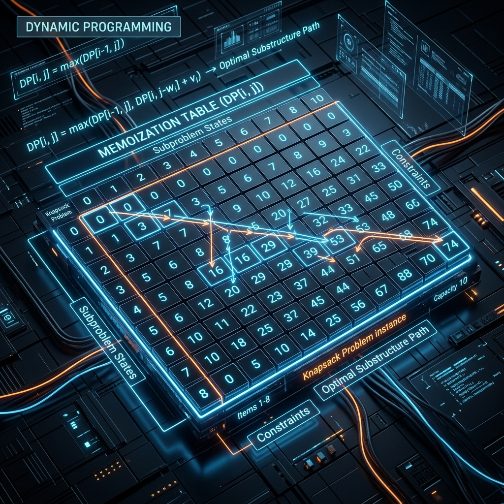
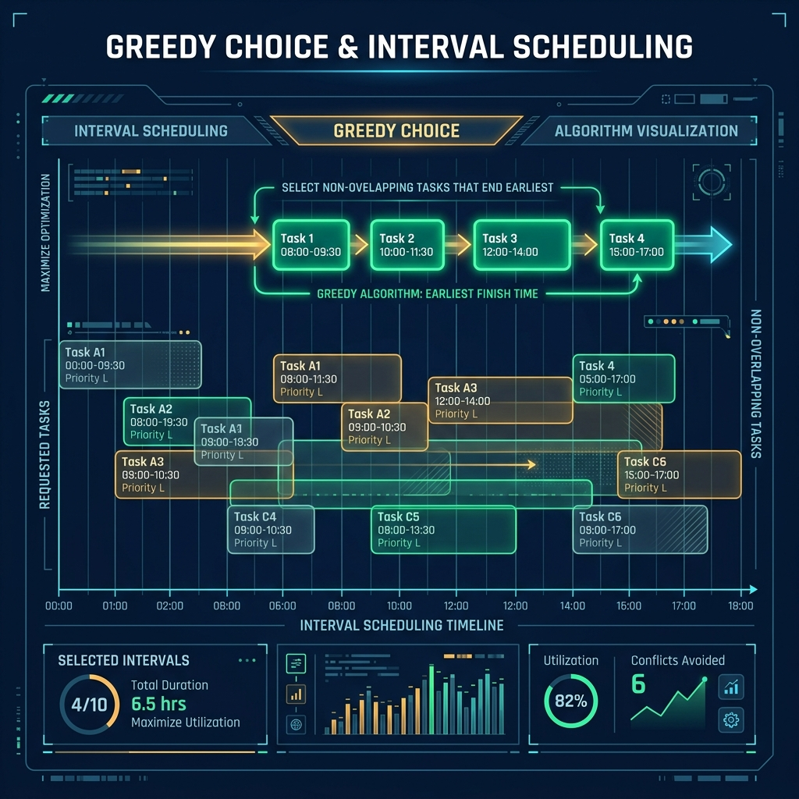
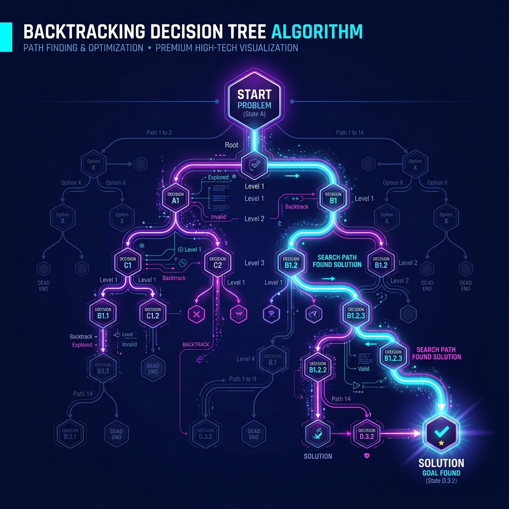

<!DOCTYPE html>
<html lang="vi">
<head>
<meta charset="UTF-8">
<meta name="viewport" content="width=device-width, initial-scale=1.0">
<title>Go DSA Patterns Vol.2 — Graph, DP, Greedy, Backtracking, Bit Math</title>
<link rel="preconnect" href="https://fonts.googleapis.com">
<link href="https://fonts.googleapis.com/css2?family=JetBrains+Mono:wght@400;500;700&family=Inter:wght@300;400;500;600;700&display=swap" rel="stylesheet">
<style>
  :root {
    --bg-primary: #0d0f14;
    --bg-secondary: #131720;
    --bg-card: #1a1f2e;
    --bg-card-hover: #1f2638;
    --bg-code: #0f1319;
    --accent-cyan: #00d4ff;
    --accent-green: #00ff88;
    --accent-purple: #a855f7;
    --accent-amber: #f59e0b;
    --accent-coral: #ff6b6b;
    --accent-blue: #3b82f6;
    --accent-pink: #ec4899;
    --text-primary: #e2e8f0;
    --text-secondary: #94a3b8;
    --text-muted: #64748b;
    --border: rgba(255,255,255,0.07);
    --border-accent: rgba(0,212,255,0.3);
    --font-mono: 'JetBrains Mono', monospace;
    --font-sans: 'Inter', sans-serif;
  }
  * { margin: 0; padding: 0; box-sizing: border-box; }
  body { background: var(--bg-primary); color: var(--text-primary); font-family: var(--font-sans); display: flex; min-height: 100vh; }

  /* SIDEBAR */
  #sidebar { width: 270px; min-width: 270px; background: var(--bg-secondary); border-right: 1px solid var(--border); position: fixed; top: 0; left: 0; bottom: 0; overflow-y: auto; z-index: 100; display: flex; flex-direction: column; }
  #sidebar::-webkit-scrollbar { width: 4px; }
  #sidebar::-webkit-scrollbar-thumb { background: var(--border); border-radius: 2px; }
  .sidebar-logo { padding: 20px 20px 16px; border-bottom: 1px solid var(--border); display: flex; align-items: center; gap: 10px; }
  .logo-icon { width: 32px; height: 32px; background: linear-gradient(135deg, var(--accent-green), var(--accent-blue)); border-radius: 8px; display: flex; align-items: center; justify-content: center; font-size: 14px; font-weight: 700; color: white; font-family: var(--font-mono); }
  .logo-text { font-size: 14px; font-weight: 600; color: var(--text-primary); line-height: 1.2; }
  .logo-sub { font-size: 11px; color: var(--accent-green); font-family: var(--font-mono); }
  .nav-section { padding: 16px 12px 8px; }
  .nav-section-title { font-size: 10px; font-weight: 600; text-transform: uppercase; letter-spacing: 0.08em; color: var(--text-muted); padding: 0 8px; margin-bottom: 6px; }
  .nav-item { display: flex; align-items: center; padding: 7px 8px; border-radius: 6px; color: var(--text-secondary); font-size: 13px; cursor: pointer; transition: all 0.15s; border: none; background: none; width: 100%; text-align: left; }
  .nav-item:hover { background: rgba(255,255,255,0.05); color: var(--text-primary); }
  .nav-item.active { background: rgba(0,255,136,0.1); color: var(--accent-green); border-left: 2px solid var(--accent-green); padding-left: 6px; }
  .nav-icon { margin-right: 8px; font-size: 14px; }

  /* TOP NAV */
  #topnav { position: fixed; top: 0; left: 270px; right: 0; height: 52px; background: var(--bg-secondary); border-bottom: 1px solid var(--border); display: flex; align-items: center; padding: 0 32px; gap: 8px; z-index: 50; overflow-x: auto; }
  .topnav-item { padding: 6px 14px; border-radius: 6px; font-size: 13px; font-weight: 500; color: var(--text-secondary); cursor: pointer; white-space: nowrap; transition: all 0.15s; border: none; background: none; }
  .topnav-item:hover { color: var(--text-primary); background: rgba(255,255,255,0.05); }
  .topnav-item.active { color: var(--accent-green); background: rgba(0,255,136,0.1); }

  /* MAIN */
  #main { margin-left: 270px; margin-top: 52px; flex: 1; max-width: calc(100% - 270px); }
  .content-area { padding: 48px 56px; max-width: 980px; }

  /* SECTION HEADERS */
  .section-header { display: flex; align-items: center; gap: 14px; margin-bottom: 32px; padding-bottom: 20px; border-bottom: 1px solid var(--border); }
  .section-number { width: 36px; height: 36px; border-radius: 8px; background: linear-gradient(135deg, var(--accent-green), var(--accent-blue)); display: flex; align-items: center; justify-content: center; font-family: var(--font-mono); font-size: 14px; font-weight: 700; color: white; flex-shrink: 0; }
  .section-title { font-size: 26px; font-weight: 700; color: var(--text-primary); }
  .section-subtitle { font-size: 14px; color: var(--text-muted); margin-top: 4px; }
  .badge { padding: 4px 10px; border-radius: 20px; font-size: 11px; font-weight: 600; letter-spacing: 0.05em; font-family: var(--font-mono); }
  .badge-expert { background: rgba(168,85,247,0.15); color: var(--accent-purple); border: 1px solid rgba(168,85,247,0.3); }
  .badge-advanced { background: rgba(245,158,11,0.12); color: var(--accent-amber); border: 1px solid rgba(245,158,11,0.3); }
  .badge-basic { background: rgba(0,255,136,0.1); color: var(--accent-green); border: 1px solid rgba(0,255,136,0.25); }

  /* PAGE SECTIONS */
  .page-section { display: none; }
  .page-section.active { display: block; }

  /* PROSE */
  .prose { font-size: 15px; line-height: 1.8; color: var(--text-secondary); margin-bottom: 20px; }
  .prose strong { color: var(--text-primary); font-weight: 600; }
  .prose code { background: rgba(0,255,136,0.08); color: var(--accent-green); padding: 2px 6px; border-radius: 4px; font-family: var(--font-mono); font-size: 13px; }
  h3 { font-size: 18px; font-weight: 600; color: var(--text-primary); margin: 28px 0 12px; }
  h4 { font-size: 15px; font-weight: 600; color: var(--text-secondary); margin: 20px 0 8px; }

  /* CARDS */
  .card { background: var(--bg-card); border: 1px solid var(--border); border-radius: 12px; padding: 24px; margin-bottom: 20px; transition: border-color 0.2s; }
  .card:hover { border-color: rgba(0,255,136,0.3); }
  .card-title { font-size: 15px; font-weight: 600; color: var(--text-primary); margin-bottom: 10px; }
  .card-grid { display: grid; grid-template-columns: 1fr 1fr; gap: 16px; margin-bottom: 24px; }
  .card-grid-3 { display: grid; grid-template-columns: 1fr 1fr 1fr; gap: 16px; margin-bottom: 24px; }

  /* CONCEPT BOX */
  .concept-box { background: linear-gradient(135deg, rgba(0,255,136,0.04), rgba(59,130,246,0.05)); border: 1px solid rgba(0,255,136,0.2); border-radius: 12px; padding: 24px; margin-bottom: 28px; }
  .concept-box .label { font-size: 10px; font-weight: 700; text-transform: uppercase; letter-spacing: 0.1em; color: var(--accent-green); margin-bottom: 8px; font-family: var(--font-mono); }
  .concept-box .title { font-size: 20px; font-weight: 700; color: var(--text-primary); margin-bottom: 10px; }

  /* CODE BLOCKS */
  .code-block { background: var(--bg-code); border: 1px solid var(--border); border-radius: 10px; overflow: hidden; margin-bottom: 24px; }
  .code-header { display: flex; align-items: center; justify-content: space-between; padding: 10px 16px; border-bottom: 1px solid var(--border); background: rgba(255,255,255,0.02); }
  .code-lang { font-size: 11px; font-weight: 600; color: var(--accent-green); font-family: var(--font-mono); text-transform: uppercase; letter-spacing: 0.08em; }
  .code-filename { font-size: 12px; color: var(--text-muted); font-family: var(--font-mono); }
  .code-badge { font-size: 10px; font-weight: 600; padding: 2px 8px; border-radius: 10px; }
  .code-badge-basic { background: rgba(0,255,136,0.1); color: var(--accent-green); }
  .code-badge-advanced { background: rgba(245,158,11,0.1); color: var(--accent-amber); }
  .code-badge-expert { background: rgba(168,85,247,0.1); color: var(--accent-purple); }
  .code-copy { font-size: 11px; cursor: pointer; background: none; border: 1px solid var(--border); border-radius: 4px; padding: 3px 10px; color: var(--text-secondary); transition: all 0.15s; font-family: var(--font-sans); }
  .code-copy:hover { border-color: var(--accent-green); color: var(--accent-green); }
  pre { margin: 0; padding: 20px; overflow-x: auto; font-family: var(--font-mono); font-size: 13px; line-height: 1.7; }
  pre::-webkit-scrollbar { height: 4px; }
  pre::-webkit-scrollbar-thumb { background: var(--border); border-radius: 2px; }

  /* Syntax */
  .kw { color: #c084fc; }
  .fn { color: #60a5fa; }
  .str { color: #86efac; }
  .cm { color: #4b5563; font-style: italic; }
  .num { color: #fb923c; }
  .tp { color: #67e8f9; }
  .pkg { color: #a78bfa; }
  .op { color: #f472b6; }

  /* DIAGRAM */
  .diagram-container { background: var(--bg-card); border: 1px solid var(--border); border-radius: 12px; padding: 24px; margin-bottom: 28px; overflow: hidden; }
  .diagram-title { font-size: 11px; font-weight: 700; text-transform: uppercase; letter-spacing: 0.1em; color: var(--text-muted); margin-bottom: 20px; font-family: var(--font-mono); text-align: center; }

  /* TABLE */
  .data-table { width: 100%; border-collapse: collapse; margin-bottom: 24px; font-size: 14px; }
  .data-table th { padding: 10px 14px; text-align: left; background: rgba(255,255,255,0.03); border-bottom: 1px solid var(--border); color: var(--text-muted); font-size: 11px; text-transform: uppercase; letter-spacing: 0.06em; font-weight: 600; }
  .data-table td { padding: 10px 14px; border-bottom: 1px solid var(--border); color: var(--text-secondary); }
  .data-table tr:hover td { background: rgba(255,255,255,0.02); }
  .data-table td code { background: rgba(0,255,136,0.08); color: var(--accent-green); padding: 2px 6px; border-radius: 4px; font-family: var(--font-mono); font-size: 12px; }
  .tc-good { color: var(--accent-green) !important; font-weight: 600; font-family: var(--font-mono); }
  .tc-mid { color: var(--accent-amber) !important; font-weight: 600; font-family: var(--font-mono); }
  .tc-bad { color: var(--accent-coral) !important; font-weight: 600; font-family: var(--font-mono); }

  /* NOTE */
  .note { display: flex; gap: 12px; padding: 14px 16px; border-radius: 8px; margin-bottom: 20px; font-size: 14px; }
  .note-warn { background: rgba(245,158,11,0.08); border: 1px solid rgba(245,158,11,0.2); color: #fcd34d; }
  .note-info { background: rgba(0,255,136,0.06); border: 1px solid rgba(0,255,136,0.2); color: var(--accent-green); }
  .note-danger { background: rgba(255,107,107,0.08); border: 1px solid rgba(255,107,107,0.2); color: var(--accent-coral); }
  .note-success { background: rgba(59,130,246,0.06); border: 1px solid rgba(59,130,246,0.2); color: var(--accent-blue); }
  .note-icon { font-size: 16px; flex-shrink: 0; margin-top: 1px; }
  .note p { margin: 0; line-height: 1.6; }

  /* REFS */
  .ref-card { background: var(--bg-card); border: 1px solid var(--border); border-radius: 10px; padding: 16px 20px; margin-bottom: 12px; display: flex; align-items: flex-start; gap: 14px; text-decoration: none; transition: all 0.15s; cursor: pointer; }
  .ref-card:hover { border-color: var(--accent-green); transform: translateX(2px); }
  .ref-icon { width: 38px; height: 38px; border-radius: 8px; display: flex; align-items: center; justify-content: center; font-size: 18px; flex-shrink: 0; }
  .ref-body { flex: 1; min-width: 0; }
  .ref-title { font-size: 14px; font-weight: 600; color: var(--text-primary); margin-bottom: 3px; }
  .ref-desc { font-size: 12px; color: var(--text-muted); line-height: 1.5; }
  .ref-url { font-size: 11px; color: var(--accent-green); font-family: var(--font-mono); margin-top: 4px; word-break: break-all; }
  .ref-stars { font-size: 11px; color: var(--accent-amber); margin-left: auto; white-space: nowrap; padding-left: 12px; }

  /* COMPARE */
  .compare-grid { display: grid; grid-template-columns: 1fr 1fr; gap: 16px; margin-bottom: 24px; }
  .compare-card { background: var(--bg-card); border: 1px solid var(--border); border-radius: 10px; overflow: hidden; }
  .compare-head { padding: 12px 16px; font-size: 12px; font-weight: 700; text-transform: uppercase; letter-spacing: 0.07em; font-family: var(--font-mono); border-bottom: 1px solid var(--border); }
  .compare-head.cyan  { background: rgba(0,212,255,0.08);  color: #00d4ff; }
  .compare-head.green { background: rgba(0,255,136,0.08);  color: var(--accent-green); }
  .compare-head.purple{ background: rgba(168,85,247,0.08); color: var(--accent-purple); }
  .compare-head.amber { background: rgba(245,158,11,0.08); color: var(--accent-amber); }
  .compare-head.blue  { background: rgba(59,130,246,0.08); color: var(--accent-blue); }
  .compare-head.coral { background: rgba(255,107,107,0.08);color: var(--accent-coral); }

  .tag { display: inline-flex; align-items: center; gap: 6px; padding: 5px 10px; border-radius: 5px; font-size: 12px; font-family: var(--font-mono); margin: 3px; }
  .tag-good { background: rgba(0,255,136,0.08); color: var(--accent-green); border: 1px solid rgba(0,255,136,0.2); }
  .tag-bad  { background: rgba(255,107,107,0.08); color: var(--accent-coral); border: 1px solid rgba(255,107,107,0.2); }

  .divider { border: none; border-top: 1px solid var(--border); margin: 36px 0; }

  /* COMPLEXITY */
  .complexity-row { display: flex; gap: 12px; margin-bottom: 20px; flex-wrap: wrap; }
  .complexity-pill { padding: 8px 16px; border-radius: 8px; font-family: var(--font-mono); font-size: 13px; font-weight: 600; }
  .cp-time  { background: rgba(0,255,136,0.1);  color: var(--accent-green);  border: 1px solid rgba(0,255,136,0.2); }
  .cp-space { background: rgba(59,130,246,0.1); color: var(--accent-blue);   border: 1px solid rgba(59,130,246,0.2); }
  .cp-label { font-size: 10px; font-weight: 400; opacity: 0.7; display: block; }

  /* OVERVIEW CARD */
  .opc { background: var(--bg-card); border: 1px solid var(--border); border-radius: 12px; padding: 20px 24px; display: flex; align-items: center; gap: 16px; cursor: pointer; transition: all 0.2s; text-decoration: none; margin-bottom: 12px; }
  .opc:hover { border-color: rgba(0,255,136,0.3); transform: translateX(3px); }
  .opc-icon { font-size: 28px; flex-shrink: 0; }
  .opc-name { font-size: 16px; font-weight: 600; color: var(--text-primary); margin-bottom: 4px; }
  .opc-desc { font-size: 13px; color: var(--text-muted); }
  .opc-tags { display: flex; gap: 6px; margin-top: 8px; flex-wrap: wrap; }
  .pt { display: inline-block; padding: 3px 10px; border-radius: 4px; font-size: 11px; font-weight: 600; font-family: var(--font-mono); margin: 2px; }
  .pt-graph   { background: rgba(0,255,136,0.1);  color: var(--accent-green);  border: 1px solid rgba(0,255,136,0.2); }
  .pt-dp      { background: rgba(59,130,246,0.1); color: var(--accent-blue);   border: 1px solid rgba(59,130,246,0.2); }
  .pt-greedy  { background: rgba(245,158,11,0.1); color: var(--accent-amber);  border: 1px solid rgba(245,158,11,0.2); }
  .pt-back    { background: rgba(168,85,247,0.1); color: var(--accent-purple); border: 1px solid rgba(168,85,247,0.2); }
  .pt-bit     { background: rgba(236,72,153,0.1); color: var(--accent-pink);   border: 1px solid rgba(236,72,153,0.2); }

  /* DP TABLE CELL */
  .dp-cell { display: inline-flex; align-items: center; justify-content: center; width: 40px; height: 40px; border: 1px solid var(--border); font-family: var(--font-mono); font-size: 13px; font-weight: 600; }
</style>
</head>
<body>

<!-- SIDEBAR -->
<nav id="sidebar">
  <div class="sidebar-logo">
    <div class="logo-icon">Go</div>
    <div>
      <div class="logo-text">DSA Patterns Vol.2</div>
      <div class="logo-sub">golang · algorithms</div>
    </div>
  </div>

  <div class="nav-section">
    <div class="nav-section-title">Tổng quan</div>
    <button class="nav-item active" onclick="showSection('intro')"><span class="nav-icon">🏠</span>Giới thiệu</button>
  </div>

  <div class="nav-section">
    <div class="nav-section-title">Graph & Traversal</div>
    <button class="nav-item" onclick="showSection('graph')"><span class="nav-icon">🕸️</span>Graph BFS / DFS</button>
  </div>

  <div class="nav-section">
    <div class="nav-section-title">Optimization</div>
    <button class="nav-item" onclick="showSection('dp')"><span class="nav-icon">📊</span>Dynamic Programming</button>
    <button class="nav-item" onclick="showSection('greedy')"><span class="nav-icon">📅</span>Greedy &amp; Intervals</button>
  </div>

  <div class="nav-section">
    <div class="nav-section-title">Search & Math</div>
    <button class="nav-item" onclick="showSection('backtrack')"><span class="nav-icon">🌳</span>Backtracking</button>
    <button class="nav-item" onclick="showSection('bits')"><span class="nav-icon">⚡</span>Bit Manipulation</button>
  </div>

  <div class="nav-section">
    <div class="nav-section-title">Phụ lục</div>
    <button class="nav-item" onclick="showSection('refs')"><span class="nav-icon">📖</span>References</button>
  </div>
</nav>

<!-- TOP NAV -->
<nav id="topnav">
  <button class="topnav-item active" onclick="showSection('intro')">Giới thiệu</button>
  <button class="topnav-item" onclick="showSection('graph')">Graph BFS/DFS</button>
  <button class="topnav-item" onclick="showSection('dp')">Dynamic Programming</button>
  <button class="topnav-item" onclick="showSection('greedy')">Greedy Intervals</button>
  <button class="topnav-item" onclick="showSection('backtrack')">Backtracking</button>
  <button class="topnav-item" onclick="showSection('bits')">Bit Manipulation</button>
  <button class="topnav-item" onclick="showSection('refs')">References</button>
</nav>

<!-- MAIN -->
<main id="main">
<div class="content-area">

<!-- ==================== INTRO ==================== -->
<section class="page-section active" id="s-intro">
  <div class="section-header">
    <div class="section-number">★</div>
    <div>
      <div class="section-title">DSA Patterns Vol.2 — Advanced Algorithms</div>
      <div class="section-subtitle">Graph · Dynamic Programming · Greedy · Backtracking · Bit Manipulation</div>
    </div>
    <span class="badge badge-advanced">PART 2</span>
  </div>

  <div class="concept-box">
    <div class="label">💡 Giới thiệu</div>
    <div class="title">5 Pattern nâng cao — từ Interview đến Production</div>
    <p class="prose">
      Nếu <strong>Part 1</strong> bao gồm các building block cơ bản (HashMap, Sliding Window, Two Pointers...), thì <strong>Part 2</strong> đi sâu vào các pattern đòi hỏi <em>tư duy thuật toán</em> cao hơn: duyệt đồ thị, tối ưu bằng quy hoạch động, lập lịch tham lam, tìm kiếm vét cạn, và thao tác bit-level.
    </p>
    <p class="prose">Mỗi pattern đều kèm: <strong>định nghĩa</strong> → <strong>khi nào dùng</strong> → <strong>template code</strong> → <strong>bài toán từ Basic đến Expert</strong> với Go idioms chuẩn.</p>
  </div>

  <div class="opc" onclick="showSection('graph')">
    <div class="opc-icon">🕸️</div>
    <div>
      <div class="opc-name">06 — Graph BFS / DFS</div>
      <div class="opc-desc">Duyệt đồ thị theo chiều rộng (BFS) và chiều sâu (DFS). Nền tảng cho: shortest path, cycle detection, topological sort, connected components.</div>
      <div class="opc-tags">
        <span class="pt pt-graph">Number of Islands</span>
        <span class="pt pt-graph">Course Schedule</span>
        <span class="pt pt-graph">Word Ladder</span>
        <span style="background:rgba(0,255,136,0.1);color:var(--accent-green);padding:2px 8px;border-radius:4px;font-family:var(--font-mono);font-size:11px">O(V+E)</span>
      </div>
    </div>
  </div>

  <div class="opc" onclick="showSection('dp')">
    <div class="opc-icon">📊</div>
    <div>
      <div class="opc-name">07 — Dynamic Programming</div>
      <div class="opc-desc">Chia bài toán thành subproblem chồng lấn, lưu kết quả (memoization/tabulation). Biến brute-force exponential thành polynomial.</div>
      <div class="opc-tags">
        <span class="pt pt-dp">Knapsack</span>
        <span class="pt pt-dp">LCS / LIS</span>
        <span class="pt pt-dp">Coin Change</span>
        <span class="pt pt-dp">Edit Distance</span>
        <span style="background:rgba(59,130,246,0.1);color:var(--accent-blue);padding:2px 8px;border-radius:4px;font-family:var(--font-mono);font-size:11px">O(n²) typical</span>
      </div>
    </div>
  </div>

  <div class="opc" onclick="showSection('greedy')">
    <div class="opc-icon">📅</div>
    <div>
      <div class="opc-name">08 — Greedy &amp; Intervals</div>
      <div class="opc-desc">Chọn lựa tốt nhất cục bộ tại mỗi bước → tối ưu toàn cục. Mạnh nhất với bài toán interval scheduling, activity selection.</div>
      <div class="opc-tags">
        <span class="pt pt-greedy">Merge Intervals</span>
        <span class="pt pt-greedy">Meeting Rooms</span>
        <span class="pt pt-greedy">Jump Game</span>
        <span style="background:rgba(245,158,11,0.1);color:var(--accent-amber);padding:2px 8px;border-radius:4px;font-family:var(--font-mono);font-size:11px">O(n log n)</span>
      </div>
    </div>
  </div>

  <div class="opc" onclick="showSection('backtrack')">
    <div class="opc-icon">🌳</div>
    <div>
      <div class="opc-name">09 — Backtracking</div>
      <div class="opc-desc">Vét cạn có tỉa nhánh. Xây dựng solution từng bước, backtrack khi vi phạm constraint. Sinh permutation, combination, puzzle solving.</div>
      <div class="opc-tags">
        <span class="pt pt-back">Permutations</span>
        <span class="pt pt-back">N-Queens</span>
        <span class="pt pt-back">Sudoku</span>
        <span class="pt pt-back">Word Search</span>
        <span style="background:rgba(168,85,247,0.1);color:var(--accent-purple);padding:2px 8px;border-radius:4px;font-family:var(--font-mono);font-size:11px">O(n!) worst</span>
      </div>
    </div>
  </div>

  <div class="opc" onclick="showSection('bits')">
    <div class="opc-icon">⚡</div>
    <div>
      <div class="opc-name">10 — Bit Manipulation &amp; Math</div>
      <div class="opc-desc">Thao tác trực tiếp trên bits — cực nhanh O(1) cho nhiều bài toán. XOR tricks, bitmask DP, power of 2, counting bits.</div>
      <div class="opc-tags">
        <span class="pt pt-bit">Single Number</span>
        <span class="pt pt-bit">Power of Two</span>
        <span class="pt pt-bit">Counting Bits</span>
        <span style="background:rgba(236,72,153,0.1);color:var(--accent-pink);padding:2px 8px;border-radius:4px;font-family:var(--font-mono);font-size:11px">O(1) ~ O(n)</span>
      </div>
    </div>
  </div>

  <hr class="divider">

  <div class="diagram-container">
    <div class="diagram-title">Độ phức tạp so sánh — Khi nào dùng pattern nào?</div>
    <svg width="100%" viewBox="0 0 820 220" xmlns="http://www.w3.org/2000/svg" font-family="JetBrains Mono">
      <!-- Axes -->
      <line x1="80" y1="180" x2="780" y2="180" stroke="#1e293b" stroke-width="1.5"/>
      <line x1="80" y1="20"  x2="80"  y2="180" stroke="#1e293b" stroke-width="1.5"/>
      <text x="420" y="210" text-anchor="middle" font-size="11" fill="#64748b">Input size n</text>
      <text x="20" y="100" font-size="11" fill="#64748b" transform="rotate(-90,20,100)">Complexity</text>
      <!-- Y labels -->
      <text x="70" y="35"  text-anchor="end" font-size="10" fill="#64748b">O(n!)</text>
      <text x="70" y="70"  text-anchor="end" font-size="10" fill="#64748b">O(2ⁿ)</text>
      <text x="70" y="105" text-anchor="end" font-size="10" fill="#64748b">O(n²)</text>
      <text x="70" y="140" text-anchor="end" font-size="10" fill="#64748b">O(n log n)</text>
      <text x="70" y="165" text-anchor="end" font-size="10" fill="#64748b">O(n)</text>
      <!-- Curves -->
      <!-- O(n!) - Backtracking worst -->
      <polyline points="80,165 180,120 280,50 380,28 480,22 580,20" fill="none" stroke="#a855f7" stroke-width="2" stroke-dasharray="6,3"/>
      <text x="590" y="24" font-size="11" fill="#a855f7">O(n!) Backtracking</text>
      <!-- O(2^n) - DP brute force -->
      <polyline points="80,165 200,130 320,80 440,50 560,35 680,28" fill="none" stroke="#ff6b6b" stroke-width="1.5" stroke-dasharray="4,3"/>
      <text x="690" y="32" font-size="11" fill="#ff6b6b">O(2ⁿ) DP naïve</text>
      <!-- O(n^2) - DP optimized -->
      <polyline points="80,165 200,152 320,138 440,120 560,100 680,78" fill="none" stroke="#f59e0b" stroke-width="2"/>
      <text x="690" y="82" font-size="11" fill="#f59e0b">O(n²) DP table</text>
      <!-- O(n log n) - Greedy with sort -->
      <polyline points="80,165 200,157 320,148 440,138 560,127 680,115" fill="none" stroke="#00d4ff" stroke-width="2"/>
      <text x="690" y="119" font-size="11" fill="#00d4ff">O(n log n) Greedy</text>
      <!-- O(n) - Graph BFS/DFS, Bit -->
      <polyline points="80,165 200,162 320,158 440,153 560,148 680,143" fill="none" stroke="#00ff88" stroke-width="2.5"/>
      <text x="690" y="147" font-size="11" fill="#00ff88">O(V+E) Graph  O(n) Bit</text>
      <!-- Annotations -->
      <rect x="82" y="165" width="8" height="8" rx="2" fill="rgba(168,85,247,0.3)" stroke="rgba(168,85,247,0.6)" stroke-width="1"/>
      <rect x="82" y="165" width="8" height="8" rx="2" fill="rgba(0,255,136,0.3)" stroke="rgba(0,255,136,0.6)" stroke-width="1"/>
    </svg>
  </div>
</section>

<!-- ==================== GRAPH BFS / DFS ==================== -->
<section class="page-section" id="s-graph">
  <div class="section-header">
    <div class="section-number">06</div>
    <div>
      <div class="section-title">Graph BFS / DFS</div>
      <div class="section-subtitle">Duyệt đồ thị theo chiều rộng &amp; chiều sâu — nền tảng của mọi graph algorithm</div>
    </div>
    <span class="badge badge-advanced">PATTERN 6</span>
  </div>

  <div class="concept-box">
    <div class="label">💡 Định nghĩa</div>
    <div class="title">Graph — Đồ thị & hai chiến lược duyệt</div>
    <p class="prose">
      <strong>Graph</strong> gồm <strong>Vertices (V)</strong> và <strong>Edges (E)</strong>. Trong Go, đồ thị thường biểu diễn bằng <code>map[int][]int</code> (adjacency list) hoặc <code>[][]int</code> cho matrix. Hai chiến lược duyệt: <strong>BFS</strong> (Queue — theo layer, tìm shortest path) và <strong>DFS</strong> (Stack/Recursion — đi sâu, phát hiện cycle, topological sort).
    </p>
  </div>

  <div class="concept-img-wrapper" style="margin: 24px 0; text-align: center; border: 1px solid var(--border); border-radius: 12px; padding: 6px; background: var(--bg-card); box-shadow: 0 12px 24px rgba(0,0,0,0.3); overflow: hidden;">
    
    <div style="margin-top: 8px; font-size: 11px; color: var(--text-secondary); font-family: var(--font-mono); letter-spacing: 0.5px; text-transform: uppercase;">
      Hình 6.1: Trực quan hóa Graph BFS / DFS và so sánh hai chiến lược duyệt
    </div>
  </div>

  <div class="diagram-container">
    <div class="diagram-title">BFS vs DFS — Traversal Order Comparison</div>
    <svg width="100%" viewBox="0 0 820 360" xmlns="http://www.w3.org/2000/svg" font-family="JetBrains Mono">
      <defs>
        <marker id="ga" viewBox="0 0 10 10" refX="8" refY="5" markerWidth="5" markerHeight="5" orient="auto">
          <path d="M2 2L8 5L2 8" fill="none" stroke="#475569" stroke-width="1.5" stroke-linecap="round"/>
        </marker>
      </defs>

      <!-- Graph structure (shared) -->
      <text x="340" y="22" text-anchor="middle" font-size="11" fill="#64748b">GRAPH (undirected)</text>
      <!-- Node 1 (root) -->
      <circle cx="340" cy="55" r="22" fill="rgba(0,255,136,0.15)" stroke="rgba(0,255,136,0.5)" stroke-width="2"/>
      <text x="340" y="61" text-anchor="middle" font-size="14" font-weight="700" fill="#00ff88">1</text>
      <!-- Node 2 -->
      <circle cx="220" cy="130" r="22" fill="rgba(255,255,255,0.04)" stroke="rgba(255,255,255,0.15)" stroke-width="1.5"/>
      <text x="220" y="136" text-anchor="middle" font-size="14" fill="#94a3b8">2</text>
      <!-- Node 3 -->
      <circle cx="460" cy="130" r="22" fill="rgba(255,255,255,0.04)" stroke="rgba(255,255,255,0.15)" stroke-width="1.5"/>
      <text x="460" y="136" text-anchor="middle" font-size="14" fill="#94a3b8">3</text>
      <!-- Node 4 -->
      <circle cx="150" cy="215" r="22" fill="rgba(255,255,255,0.04)" stroke="rgba(255,255,255,0.15)" stroke-width="1.5"/>
      <text x="150" y="221" text-anchor="middle" font-size="14" fill="#94a3b8">4</text>
      <!-- Node 5 -->
      <circle cx="290" cy="215" r="22" fill="rgba(255,255,255,0.04)" stroke="rgba(255,255,255,0.15)" stroke-width="1.5"/>
      <text x="290" y="221" text-anchor="middle" font-size="14" fill="#94a3b8">5</text>
      <!-- Node 6 -->
      <circle cx="390" cy="215" r="22" fill="rgba(255,255,255,0.04)" stroke="rgba(255,255,255,0.15)" stroke-width="1.5"/>
      <text x="390" y="221" text-anchor="middle" font-size="14" fill="#94a3b8">6</text>
      <!-- Node 7 -->
      <circle cx="530" cy="215" r="22" fill="rgba(255,255,255,0.04)" stroke="rgba(255,255,255,0.15)" stroke-width="1.5"/>
      <text x="530" y="221" text-anchor="middle" font-size="14" fill="#94a3b8">7</text>
      <!-- Edges -->
      <line x1="322" y1="70" x2="238" y2="115" stroke="#334155" stroke-width="1.5"/>
      <line x1="358" y1="70" x2="442" y2="115" stroke="#334155" stroke-width="1.5"/>
      <line x1="202" y1="145" x2="168" y2="200" stroke="#334155" stroke-width="1.5"/>
      <line x1="232" y1="145" x2="274" y2="200" stroke="#334155" stroke-width="1.5"/>
      <line x1="444" y1="145" x2="406" y2="200" stroke="#334155" stroke-width="1.5"/>
      <line x1="476" y1="145" x2="514" y2="200" stroke="#334155" stroke-width="1.5"/>

      <!-- BFS order annotation (left) -->
      <text x="30" y="270" font-size="12" font-weight="700" fill="#00d4ff">BFS Order:</text>
      <text x="30" y="290" font-size="12" fill="#94a3b8">Level 0: 1</text>
      <text x="30" y="308" font-size="12" fill="#94a3b8">Level 1: 2 → 3</text>
      <text x="30" y="326" font-size="12" fill="#94a3b8">Level 2: 4 → 5 → 6 → 7</text>
      <rect x="28" y="276" width="220" height="58" rx="6" fill="rgba(0,212,255,0.04)" stroke="rgba(0,212,255,0.2)" stroke-width="1"/>
      <text x="30" y="348" font-size="11" fill="#64748b">Queue: push by layers</text>
      <text x="30" y="362" font-size="11" fill="#00ff88">→ Shortest Path guaranteed</text>

      <!-- DFS order annotation (right) -->
      <text x="580" y="270" font-size="12" font-weight="700" fill="#a855f7">DFS Order (preorder):</text>
      <text x="580" y="290" font-size="12" fill="#94a3b8">1 → 2 → 4 → 5</text>
      <text x="580" y="308" font-size="12" fill="#94a3b8">↩ backtrack to 1</text>
      <text x="580" y="326" font-size="12" fill="#94a3b8">→ 3 → 6 → 7</text>
      <rect x="578" y="276" width="220" height="58" rx="6" fill="rgba(168,85,247,0.04)" stroke="rgba(168,85,247,0.2)" stroke-width="1"/>
      <text x="580" y="348" font-size="11" fill="#64748b">Stack / Recursion</text>
      <text x="580" y="362" font-size="11" fill="#a855f7">→ Cycle detection, Topo sort</text>

      <!-- BFS vs DFS arrows on graph -->
      <text x="160" y="270" font-size="10" fill="#00d4ff">①②③④⑤⑥⑦</text>
    </svg>
  </div>

  <h3>Biểu diễn đồ thị trong Go</h3>
  <div class="code-block">
    <div class="code-header">
      <span class="code-lang">GO</span>
      <span class="code-filename">graph_representation.go</span>
      <span class="code-badge code-badge-basic">BASIC</span>
    </div>
    <pre><span class="cm">// Adjacency List — dùng phổ biến nhất cho sparse graph</span>
<span class="kw">type</span> <span class="tp">Graph</span> <span class="kw">struct</span> {
    adj <span class="kw">map</span>[<span class="tp">int</span>][]<span class="tp">int</span>
}

<span class="kw">func</span> <span class="fn">NewGraph</span>() *<span class="tp">Graph</span> {
    <span class="kw">return</span> &<span class="tp">Graph</span>{adj: <span class="kw">make</span>(<span class="kw">map</span>[<span class="tp">int</span>][]<span class="tp">int</span>)}
}

<span class="kw">func</span> (g *<span class="tp">Graph</span>) <span class="fn">AddEdge</span>(u, v <span class="tp">int</span>) {
    g.adj[u] = <span class="fn">append</span>(g.adj[u], v)
    g.adj[v] = <span class="fn">append</span>(g.adj[v], u) <span class="cm">// undirected</span>
}

<span class="cm">// BFS Template — O(V+E) time, O(V) space</span>
<span class="kw">func</span> (g *<span class="tp">Graph</span>) <span class="fn">BFS</span>(start <span class="tp">int</span>) []<span class="tp">int</span> {
    visited := <span class="kw">make</span>(<span class="kw">map</span>[<span class="tp">int</span>]<span class="tp">bool</span>)
    queue   := []<span class="tp">int</span>{start}
    order   := []<span class="tp">int</span>{}
    visited[start] = <span class="kw">true</span>

    <span class="kw">for</span> <span class="fn">len</span>(queue) > <span class="num">0</span> {
        node   := queue[<span class="num">0</span>]; queue = queue[<span class="num">1</span>:]
        order   = <span class="fn">append</span>(order, node)
        <span class="kw">for</span> _, nb := <span class="kw">range</span> g.adj[node] {
            <span class="kw">if</span> !visited[nb] {
                visited[nb] = <span class="kw">true</span>
                queue = <span class="fn">append</span>(queue, nb)
            }
        }
    }
    <span class="kw">return</span> order
}

<span class="cm">// DFS Template — iterative (stack)</span>
<span class="kw">func</span> (g *<span class="tp">Graph</span>) <span class="fn">DFS</span>(start <span class="tp">int</span>) []<span class="tp">int</span> {
    visited := <span class="kw">make</span>(<span class="kw">map</span>[<span class="tp">int</span>]<span class="tp">bool</span>)
    stack   := []<span class="tp">int</span>{start}
    order   := []<span class="tp">int</span>{}

    <span class="kw">for</span> <span class="fn">len</span>(stack) > <span class="num">0</span> {
        node  := stack[<span class="fn">len</span>(stack)-<span class="num">1</span>]; stack = stack[:<span class="fn">len</span>(stack)-<span class="num">1</span>]
        <span class="kw">if</span> visited[node] { <span class="kw">continue</span> }
        visited[node] = <span class="kw">true</span>
        order = <span class="fn">append</span>(order, node)
        <span class="kw">for</span> _, nb := <span class="kw">range</span> g.adj[node] {
            <span class="kw">if</span> !visited[nb] { stack = <span class="fn">append</span>(stack, nb) }
        }
    }
    <span class="kw">return</span> order
}</pre>
  </div>

  <h3>📝 Example 1 — Number of Islands (BFS, Advanced)</h3>
  <div class="complexity-row">
    <div class="complexity-pill cp-time"><span class="cp-label">Time</span>O(m·n)</div>
    <div class="complexity-pill cp-space"><span class="cp-label">Space</span>O(min(m,n))</div>
  </div>
  <div class="code-block">
    <div class="code-header">
      <span class="code-lang">GO</span>
      <span class="code-filename">number_of_islands.go</span>
      <span class="code-badge code-badge-advanced">ADVANCED</span>
    </div>
    <pre><span class="cm">// NumIslands: đếm số hòn đảo trong grid '1'/'0'
// Dùng BFS từ mỗi ô '1' chưa thăm, flood-fill toàn bộ đảo</span>
<span class="kw">func</span> <span class="fn">numIslands</span>(grid [][]<span class="tp">byte</span>) <span class="tp">int</span> {
    <span class="kw">if</span> <span class="fn">len</span>(grid) == <span class="num">0</span> { <span class="kw">return</span> <span class="num">0</span> }
    m, n := <span class="fn">len</span>(grid), <span class="fn">len</span>(grid[<span class="num">0</span>])
    dirs := [][<span class="num">2</span>]<span class="tp">int</span>{{<span class="num">0</span>,<span class="num">1</span>},{<span class="num">0</span>,-<span class="num">1</span>},{<span class="num">1</span>,<span class="num">0</span>},{-<span class="num">1</span>,<span class="num">0</span>}}
    islands := <span class="num">0</span>

    <span class="cm">// BFS flood-fill</span>
    <span class="kw">var</span> <span class="fn">bfs</span> = <span class="kw">func</span>(r, c <span class="tp">int</span>) {
        queue := [][<span class="num">2</span>]<span class="tp">int</span>{{r, c}}
        grid[r][c] = <span class="str">'0'</span> <span class="cm">// mark visited</span>
        <span class="kw">for</span> <span class="fn">len</span>(queue) > <span class="num">0</span> {
            cur := queue[<span class="num">0</span>]; queue = queue[<span class="num">1</span>:]
            <span class="kw">for</span> _, d := <span class="kw">range</span> dirs {
                nr, nc := cur[<span class="num">0</span>]+d[<span class="num">0</span>], cur[<span class="num">1</span>]+d[<span class="num">1</span>]
                <span class="kw">if</span> nr >= <span class="num">0</span> && nr < m && nc >= <span class="num">0</span> && nc < n && grid[nr][nc] == <span class="str">'1'</span> {
                    grid[nr][nc] = <span class="str">'0'</span>
                    queue = <span class="fn">append</span>(queue, [<span class="num">2</span>]<span class="tp">int</span>{nr, nc})
                }
            }
        }
    }

    <span class="kw">for</span> r := <span class="num">0</span>; r < m; r++ {
        <span class="kw">for</span> c := <span class="num">0</span>; c < n; c++ {
            <span class="kw">if</span> grid[r][c] == <span class="str">'1'</span> {
                islands++
                <span class="fn">bfs</span>(r, c)
            }
        }
    }
    <span class="kw">return</span> islands
}</pre>
  </div>

  <h3>📝 Example 2 — Course Schedule (DFS + Cycle Detection)</h3>
  <div class="complexity-row">
    <div class="complexity-pill cp-time"><span class="cp-label">Time</span>O(V+E)</div>
    <div class="complexity-pill cp-space"><span class="cp-label">Space</span>O(V+E)</div>
  </div>
  <div class="code-block">
    <div class="code-header">
      <span class="code-lang">GO</span>
      <span class="code-filename">course_schedule.go</span>
      <span class="code-badge code-badge-advanced">ADVANCED</span>
    </div>
    <pre><span class="cm">// CanFinish: kiểm tra có thể hoàn thành tất cả course không
// Bản chất: phát hiện cycle trong directed graph (prerequisite graph)
// 3-color DFS: white(0)=unvisited, gray(1)=in-stack, black(2)=done</span>
<span class="kw">func</span> <span class="fn">canFinish</span>(numCourses <span class="tp">int</span>, prerequisites [][]<span class="tp">int</span>) <span class="tp">bool</span> {
    adj := <span class="kw">make</span>([][]<span class="tp">int</span>, numCourses)
    <span class="kw">for</span> _, p := <span class="kw">range</span> prerequisites {
        adj[p[<span class="num">1</span>]] = <span class="fn">append</span>(adj[p[<span class="num">1</span>]], p[<span class="num">0</span>])
    }
    color := <span class="kw">make</span>([]<span class="tp">int</span>, numCourses) <span class="cm">// 0=white, 1=gray, 2=black</span>

    <span class="kw">var</span> <span class="fn">hasCycle</span> <span class="kw">func</span>(<span class="tp">int</span>) <span class="tp">bool</span>
    <span class="fn">hasCycle</span> = <span class="kw">func</span>(u <span class="tp">int</span>) <span class="tp">bool</span> {
        color[u] = <span class="num">1</span> <span class="cm">// gray: đang xét</span>
        <span class="kw">for</span> _, v := <span class="kw">range</span> adj[u] {
            <span class="kw">if</span> color[v] == <span class="num">1</span> { <span class="kw">return</span> <span class="kw">true</span> }  <span class="cm">// back edge → cycle</span>
            <span class="kw">if</span> color[v] == <span class="num">0</span> && <span class="fn">hasCycle</span>(v) { <span class="kw">return</span> <span class="kw">true</span> }
        }
        color[u] = <span class="num">2</span> <span class="cm">// black: done</span>
        <span class="kw">return</span> <span class="kw">false</span>
    }
    <span class="kw">for</span> i := <span class="num">0</span>; i < numCourses; i++ {
        <span class="kw">if</span> color[i] == <span class="num">0</span> && <span class="fn">hasCycle</span>(i) { <span class="kw">return</span> <span class="kw">false</span> }
    }
    <span class="kw">return</span> <span class="kw">true</span>
}

<span class="cm">// Topological Sort (Kahn's BFS algorithm)</span>
<span class="kw">func</span> <span class="fn">findOrder</span>(n <span class="tp">int</span>, prereqs [][]<span class="tp">int</span>) []<span class="tp">int</span> {
    adj    := <span class="kw">make</span>([][]<span class="tp">int</span>, n)
    inDeg  := <span class="kw">make</span>([]<span class="tp">int</span>, n)
    <span class="kw">for</span> _, p := <span class="kw">range</span> prereqs {
        adj[p[<span class="num">1</span>]] = <span class="fn">append</span>(adj[p[<span class="num">1</span>]], p[<span class="num">0</span>])
        inDeg[p[<span class="num">0</span>]]++
    }
    queue := []<span class="tp">int</span>{}
    <span class="kw">for</span> i, d := <span class="kw">range</span> inDeg {
        <span class="kw">if</span> d == <span class="num">0</span> { queue = <span class="fn">append</span>(queue, i) }
    }
    order := []<span class="tp">int</span>{}
    <span class="kw">for</span> <span class="fn">len</span>(queue) > <span class="num">0</span> {
        u := queue[<span class="num">0</span>]; queue = queue[<span class="num">1</span>:]
        order = <span class="fn">append</span>(order, u)
        <span class="kw">for</span> _, v := <span class="kw">range</span> adj[u] {
            inDeg[v]--
            <span class="kw">if</span> inDeg[v] == <span class="num">0</span> { queue = <span class="fn">append</span>(queue, v) }
        }
    }
    <span class="kw">if</span> <span class="fn">len</span>(order) == n { <span class="kw">return</span> order }
    <span class="kw">return</span> <span class="kw">nil</span> <span class="cm">// cycle detected</span>
}</pre>
  </div>

  <h3>📝 Example 3 — Word Ladder (BFS Shortest Path, Expert)</h3>
  <div class="code-block">
    <div class="code-header">
      <span class="code-lang">GO</span>
      <span class="code-filename">word_ladder.go</span>
      <span class="code-badge code-badge-expert">EXPERT</span>
    </div>
    <pre><span class="cm">// LadderLength: biến đổi beginWord→endWord, mỗi bước đổi 1 chữ
// BFS trên "implicit graph" — không xây adjacency list trước
// Trick: với mỗi word, thử thay từng vị trí bằng a-z → O(n·L·26)</span>
<span class="kw">func</span> <span class="fn">ladderLength</span>(beginWord, endWord <span class="tp">string</span>, wordList []<span class="tp">string</span>) <span class="tp">int</span> {
    wordSet := <span class="kw">make</span>(<span class="kw">map</span>[<span class="tp">string</span>]<span class="tp">bool</span>)
    <span class="kw">for</span> _, w := <span class="kw">range</span> wordList { wordSet[w] = <span class="kw">true</span> }
    <span class="kw">if</span> !wordSet[endWord] { <span class="kw">return</span> <span class="num">0</span> }

    <span class="kw">type</span> <span class="tp">state</span> <span class="kw">struct</span>{ word <span class="tp">string</span>; steps <span class="tp">int</span> }
    queue   := []<span class="tp">state</span>{{beginWord, <span class="num">1</span>}}
    visited := <span class="kw">map</span>[<span class="tp">string</span>]<span class="tp">bool</span>{beginWord: <span class="kw">true</span>}

    <span class="kw">for</span> <span class="fn">len</span>(queue) > <span class="num">0</span> {
        cur := queue[<span class="num">0</span>]; queue = queue[<span class="num">1</span>:]
        bs  := []<span class="tp">byte</span>(cur.word)

        <span class="kw">for</span> i := <span class="num">0</span>; i < <span class="fn">len</span>(bs); i++ {
            orig := bs[i]
            <span class="kw">for</span> c := <span class="tp">byte</span>(<span class="str">'a'</span>); c <= <span class="str">'z'</span>; c++ {
                <span class="kw">if</span> c == orig { <span class="kw">continue</span> }
                bs[i] = c
                next := <span class="tp">string</span>(bs)
                <span class="kw">if</span> next == endWord { <span class="kw">return</span> cur.steps + <span class="num">1</span> }
                <span class="kw">if</span> wordSet[next] && !visited[next] {
                    visited[next] = <span class="kw">true</span>
                    queue = <span class="fn">append</span>(queue, <span class="tp">state</span>{next, cur.steps + <span class="num">1</span>})
                }
            }
            bs[i] = orig
        }
    }
    <span class="kw">return</span> <span class="num">0</span>
}

<span class="cm">// Bidirectional BFS: bắt đầu từ cả 2 đầu → O(b^(d/2)) thay vì O(b^d)</span>
<span class="cm">// Phù hợp khi wordList rất lớn và path dài</span></pre>
  </div>

  <h3>📝 Example 4 — Dijkstra Shortest Path (Expert)</h3>
  <div class="code-block">
    <div class="code-header">
      <span class="code-lang">GO</span>
      <span class="code-filename">dijkstra.go</span>
      <span class="code-badge code-badge-expert">EXPERT</span>
    </div>
    <pre><span class="cm">// Dijkstra: shortest path từ source đến tất cả nodes
// Weighted graph — dùng min-heap (container/heap)
// Time: O((V+E) log V)  Space: O(V)</span>
<span class="kw">import</span> <span class="str">"container/heap"</span>

<span class="kw">type</span> <span class="tp">Item</span> <span class="kw">struct</span>{ node, dist <span class="tp">int</span> }
<span class="kw">type</span> <span class="tp">MinHeap</span> []<span class="tp">Item</span>
<span class="kw">func</span> (h <span class="tp">MinHeap</span>) <span class="fn">Len</span>() <span class="tp">int</span>            { <span class="kw">return</span> <span class="fn">len</span>(h) }
<span class="kw">func</span> (h <span class="tp">MinHeap</span>) <span class="fn">Less</span>(i, j <span class="tp">int</span>) <span class="tp">bool</span> { <span class="kw">return</span> h[i].dist < h[j].dist }
<span class="kw">func</span> (h <span class="tp">MinHeap</span>) <span class="fn">Swap</span>(i, j <span class="tp">int</span>)       { h[i], h[j] = h[j], h[i] }
<span class="kw">func</span> (h *<span class="tp">MinHeap</span>) <span class="fn">Push</span>(x <span class="kw">any</span>)        { *h = <span class="fn">append</span>(*h, x.(<span class="tp">Item</span>)) }
<span class="kw">func</span> (h *<span class="tp">MinHeap</span>) <span class="fn">Pop</span>() <span class="kw">any</span> {
    old := *h; n := <span class="fn">len</span>(old)
    x := old[n-<span class="num">1</span>]; *h = old[:n-<span class="num">1</span>]; <span class="kw">return</span> x
}

<span class="kw">func</span> <span class="fn">dijkstra</span>(graph [][][<span class="num">2</span>]<span class="tp">int</span>, src <span class="tp">int</span>) []<span class="tp">int</span> {
    n    := <span class="fn">len</span>(graph)
    dist := <span class="kw">make</span>([]<span class="tp">int</span>, n)
    <span class="kw">for</span> i := <span class="kw">range</span> dist { dist[i] = <span class="num">1</span><<<span class="num">31</span> - <span class="num">1</span> } <span class="cm">// math.MaxInt32</span>
    dist[src] = <span class="num">0</span>

    h := &<span class="tp">MinHeap</span>{{src, <span class="num">0</span>}}
    heap.<span class="fn">Init</span>(h)

    <span class="kw">for</span> h.<span class="fn">Len</span>() > <span class="num">0</span> {
        cur := heap.<span class="fn">Pop</span>(h).(<span class="tp">Item</span>)
        <span class="kw">if</span> cur.dist > dist[cur.node] { <span class="kw">continue</span> } <span class="cm">// stale entry</span>
        <span class="kw">for</span> _, nb := <span class="kw">range</span> graph[cur.node] {
            v, w := nb[<span class="num">0</span>], nb[<span class="num">1</span>]
            <span class="kw">if</span> d := cur.dist + w; d < dist[v] {
                dist[v] = d
                heap.<span class="fn">Push</span>(h, <span class="tp">Item</span>{v, d})
            }
        }
    }
    <span class="kw">return</span> dist
}</pre>
  </div>

  <div class="note note-warn">
    <div class="note-icon">⚠️</div>
    <p><strong>Pitfall:</strong> Không đánh dấu <code>visited</code> trước khi enqueue → duyệt lặp lại O(V²). Đối với grid, <strong>mark ô đã thăm ngay khi enqueue</strong>, không phải khi dequeue.</p>
  </div>
</section>

<!-- ==================== DYNAMIC PROGRAMMING ==================== -->
<section class="page-section" id="s-dp">
  <div class="section-header">
    <div class="section-number">07</div>
    <div>
      <div class="section-title">Dynamic Programming</div>
      <div class="section-subtitle">Memoization &amp; Tabulation — biến exponential thành polynomial</div>
    </div>
    <span class="badge badge-expert">PATTERN 7</span>
  </div>

  <div class="concept-box">
    <div class="label">💡 Định nghĩa</div>
    <div class="title">Dynamic Programming — 2 điều kiện cần</div>
    <p class="prose">
      DP áp dụng khi bài toán có: <strong>1) Optimal Substructure</strong> — lời giải tối ưu chứa lời giải tối ưu của subproblem; <strong>2) Overlapping Subproblems</strong> — cùng một subproblem được giải nhiều lần. Hai cách triển khai: <strong>Top-Down (Memoization)</strong> = đệ quy + cache, <strong>Bottom-Up (Tabulation)</strong> = vòng lặp + bảng.
    </p>
  </div>

  <div class="concept-img-wrapper" style="margin: 24px 0; text-align: center; border: 1px solid var(--border); border-radius: 12px; padding: 6px; background: var(--bg-card); box-shadow: 0 12px 24px rgba(0,0,0,0.3); overflow: hidden;">
    
    <div style="margin-top: 8px; font-size: 11px; color: var(--text-secondary); font-family: var(--font-mono); letter-spacing: 0.5px; text-transform: uppercase;">
      Hình 7.1: Trực quan hóa Dynamic Programming (Memoization & Tabulation)
    </div>
  </div>

  <div class="diagram-container">
    <div class="diagram-title">Top-Down vs Bottom-Up — Fibonacci(5)</div>
    <svg width="100%" viewBox="0 0 820 320" xmlns="http://www.w3.org/2000/svg" font-family="JetBrains Mono">
      <!-- TOP-DOWN (left) -->
      <text x="190" y="22" text-anchor="middle" font-size="12" font-weight="700" fill="#a855f7">Top-Down (Memoization)</text>
      <!-- Recursion tree -->
      <circle cx="190" cy="50" r="20" fill="rgba(168,85,247,0.15)" stroke="rgba(168,85,247,0.5)" stroke-width="1.5"/>
      <text x="190" y="56" text-anchor="middle" font-size="11" fill="#a855f7">f(5)</text>
      <line x1="172" y1="68" x2="140" y2="92" stroke="#475569" stroke-width="1"/>
      <line x1="208" y1="68" x2="248" y2="92" stroke="#475569" stroke-width="1"/>
      <circle cx="130" cy="110" r="18" fill="rgba(168,85,247,0.1)" stroke="rgba(168,85,247,0.3)" stroke-width="1.2"/>
      <text x="130" y="115" text-anchor="middle" font-size="11" fill="#a855f7">f(4)</text>
      <circle cx="255" cy="110" r="18" fill="rgba(168,85,247,0.1)" stroke="rgba(168,85,247,0.3)" stroke-width="1.2"/>
      <text x="255" y="115" text-anchor="middle" font-size="11" fill="#a855f7">f(3)</text>
      <!-- f(4) children -->
      <line x1="116" y1="126" x2="88" y2="150" stroke="#475569" stroke-width="1"/>
      <line x1="144" y1="126" x2="170" y2="150" stroke="#475569" stroke-width="1"/>
      <circle cx="80" cy="168" r="18" fill="rgba(168,85,247,0.08)" stroke="rgba(168,85,247,0.2)" stroke-width="1"/>
      <text x="80" y="173" text-anchor="middle" font-size="11" fill="#a855f7">f(3)</text>
      <circle cx="178" cy="168" r="18" fill="rgba(0,255,136,0.12)" stroke="rgba(0,255,136,0.4)" stroke-width="1.5"/>
      <text x="178" y="173" text-anchor="middle" font-size="11" fill="#00ff88">f(2)</text>
      <!-- f(3) at right children -->
      <line x1="241" y1="126" x2="218" y2="150" stroke="#475569" stroke-width="1"/>
      <line x1="269" y1="126" x2="292" y2="150" stroke="#475569" stroke-width="1"/>
      <circle cx="210" cy="168" r="18" fill="rgba(255,107,107,0.1)" stroke="rgba(255,107,107,0.3)" stroke-width="1" stroke-dasharray="4,2"/>
      <text x="210" y="173" text-anchor="middle" font-size="10" fill="#ff6b6b">f(2)✓</text>
      <circle cx="300" cy="168" r="18" fill="rgba(255,107,107,0.1)" stroke="rgba(255,107,107,0.3)" stroke-width="1" stroke-dasharray="4,2"/>
      <text x="300" y="173" text-anchor="middle" font-size="10" fill="#ff6b6b">f(1)✓</text>
      <text x="190" y="210" text-anchor="middle" font-size="11" fill="#64748b">✓ = cached (memo hit)</text>
      <text x="190" y="226" text-anchor="middle" font-size="11" fill="#a855f7">memo[2]→1, memo[3]→2...</text>

      <!-- Arrow between -->
      <text x="420" y="140" text-anchor="middle" font-size="20" fill="#475569">vs</text>

      <!-- BOTTOM-UP (right) -->
      <text x="610" y="22" text-anchor="middle" font-size="12" font-weight="700" fill="#3b82f6">Bottom-Up (Tabulation)</text>
      <!-- DP table -->
      <text x="480" y="60" font-size="11" fill="#64748b">i:</text>
      <text x="540" y="60" font-size="11" fill="#64748b">dp table →</text>
      <!-- Row headers -->
      <text x="490" y="90" font-size="12" fill="#3b82f6">dp[0]</text>
      <text x="490" y="120" font-size="12" fill="#3b82f6">dp[1]</text>
      <text x="490" y="150" font-size="12" fill="#3b82f6">dp[2]</text>
      <text x="490" y="180" font-size="12" fill="#3b82f6">dp[3]</text>
      <text x="490" y="210" font-size="12" fill="#3b82f6">dp[4]</text>
      <text x="490" y="240" font-size="12" font-weight="700" fill="#00ff88">dp[5]</text>
      <!-- Values -->
      <rect x="570" y="76" width="40" height="26" rx="4" fill="rgba(59,130,246,0.1)" stroke="rgba(59,130,246,0.3)" stroke-width="1"/>
      <text x="590" y="94" text-anchor="middle" font-size="13" font-weight="700" fill="#3b82f6">0</text>
      <rect x="570" y="106" width="40" height="26" rx="4" fill="rgba(59,130,246,0.1)" stroke="rgba(59,130,246,0.3)" stroke-width="1"/>
      <text x="590" y="124" text-anchor="middle" font-size="13" font-weight="700" fill="#3b82f6">1</text>
      <rect x="570" y="136" width="40" height="26" rx="4" fill="rgba(59,130,246,0.1)" stroke="rgba(59,130,246,0.3)" stroke-width="1"/>
      <text x="590" y="154" text-anchor="middle" font-size="13" font-weight="700" fill="#3b82f6">1</text>
      <rect x="570" y="166" width="40" height="26" rx="4" fill="rgba(59,130,246,0.1)" stroke="rgba(59,130,246,0.3)" stroke-width="1"/>
      <text x="590" y="184" text-anchor="middle" font-size="13" font-weight="700" fill="#3b82f6">2</text>
      <rect x="570" y="196" width="40" height="26" rx="4" fill="rgba(59,130,246,0.1)" stroke="rgba(59,130,246,0.3)" stroke-width="1"/>
      <text x="590" y="214" text-anchor="middle" font-size="13" font-weight="700" fill="#3b82f6">3</text>
      <rect x="570" y="226" width="40" height="26" rx="4" fill="rgba(0,255,136,0.2)" stroke="rgba(0,255,136,0.6)" stroke-width="2"/>
      <text x="590" y="244" text-anchor="middle" font-size="13" font-weight="700" fill="#00ff88">5</text>
      <!-- Arrow progression -->
      <line x1="612" y1="89" x2="612" y2="239" stroke="#3b82f6" stroke-width="1" stroke-dasharray="3,2"/>
      <text x="660" y="150" font-size="12" fill="#64748b">dp[i] =</text>
      <text x="660" y="168" font-size="12" fill="#3b82f6">dp[i-1] +</text>
      <text x="660" y="185" font-size="12" fill="#3b82f6">dp[i-2]</text>
      <text x="660" y="220" font-size="11" fill="#00ff88">O(n) time</text>
      <text x="660" y="236" font-size="11" fill="#00ff88">O(1) space*</text>
      <text x="620" y="278" font-size="11" fill="#64748b">*optimize: chỉ cần 2 biến prev, curr</text>
    </svg>
  </div>

  <h3>📝 Example 1 — Climbing Stairs / Fibonacci (Basic)</h3>
  <div class="code-block">
    <div class="code-header">
      <span class="code-lang">GO</span>
      <span class="code-filename">climbing_stairs.go</span>
      <span class="code-badge code-badge-basic">BASIC</span>
    </div>
    <pre><span class="cm">// ClimbStairs: n bậc, mỗi lần bước 1 hoặc 2 bậc → bao nhiêu cách?
// dp[i] = dp[i-1] + dp[i-2]  (giống Fibonacci)</span>

<span class="cm">// Top-Down</span>
<span class="kw">func</span> <span class="fn">climbStairsMemo</span>(n <span class="tp">int</span>) <span class="tp">int</span> {
    memo := <span class="kw">make</span>([]<span class="tp">int</span>, n+<span class="num">1</span>)
    <span class="kw">var</span> <span class="fn">dp</span> <span class="kw">func</span>(<span class="tp">int</span>) <span class="tp">int</span>
    <span class="fn">dp</span> = <span class="kw">func</span>(i <span class="tp">int</span>) <span class="tp">int</span> {
        <span class="kw">if</span> i <= <span class="num">1</span> { <span class="kw">return</span> <span class="num">1</span> }
        <span class="kw">if</span> memo[i] != <span class="num">0</span> { <span class="kw">return</span> memo[i] }
        memo[i] = <span class="fn">dp</span>(i-<span class="num">1</span>) + <span class="fn">dp</span>(i-<span class="num">2</span>)
        <span class="kw">return</span> memo[i]
    }
    <span class="kw">return</span> <span class="fn">dp</span>(n)
}

<span class="cm">// Bottom-Up O(1) space — chỉ giữ 2 biến</span>
<span class="kw">func</span> <span class="fn">climbStairs</span>(n <span class="tp">int</span>) <span class="tp">int</span> {
    a, b := <span class="num">1</span>, <span class="num">1</span>
    <span class="kw">for</span> i := <span class="num">2</span>; i <= n; i++ {
        a, b = b, a+b
    }
    <span class="kw">return</span> b
}</pre>
  </div>

  <h3>📝 Example 2 — 0/1 Knapsack (Advanced)</h3>
  <div class="complexity-row">
    <div class="complexity-pill cp-time"><span class="cp-label">Time</span>O(n·W)</div>
    <div class="complexity-pill cp-space"><span class="cp-label">Space</span>O(W)</div>
  </div>
  <div class="code-block">
    <div class="code-header">
      <span class="code-lang">GO</span>
      <span class="code-filename">knapsack_01.go</span>
      <span class="code-badge code-badge-advanced">ADVANCED</span>
    </div>
    <pre><span class="cm">// Knapsack 0/1: chọn items có weight/value để maximize value trong capacity W
// dp[j] = max value dùng capacity j
// Duyệt W..weight để tránh dùng 1 item 2 lần (0/1 constraint)</span>
<span class="kw">func</span> <span class="fn">knapsack01</span>(weights, values []<span class="tp">int</span>, W <span class="tp">int</span>) <span class="tp">int</span> {
    dp := <span class="kw">make</span>([]<span class="tp">int</span>, W+<span class="num">1</span>)

    <span class="kw">for</span> i := <span class="num">0</span>; i < <span class="fn">len</span>(weights); i++ {
        <span class="cm">// Duyệt ngược để item i chỉ dùng 1 lần</span>
        <span class="kw">for</span> j := W; j >= weights[i]; j-- {
            take   := dp[j-weights[i]] + values[i]
            <span class="kw">if</span> take > dp[j] { dp[j] = take }
        }
    }
    <span class="kw">return</span> dp[W]
}

<span class="cm">// Unbounded Knapsack (có thể dùng item nhiều lần): duyệt thuận</span>
<span class="kw">func</span> <span class="fn">knapsackUnbounded</span>(weights, values []<span class="tp">int</span>, W <span class="tp">int</span>) <span class="tp">int</span> {
    dp := <span class="kw">make</span>([]<span class="tp">int</span>, W+<span class="num">1</span>)
    <span class="kw">for</span> j := <span class="num">1</span>; j <= W; j++ {
        <span class="kw">for</span> i := <span class="num">0</span>; i < <span class="fn">len</span>(weights); i++ {
            <span class="kw">if</span> j >= weights[i] {
                <span class="kw">if</span> v := dp[j-weights[i]] + values[i]; v > dp[j] { dp[j] = v }
            }
        }
    }
    <span class="kw">return</span> dp[W]
}</pre>
  </div>

  <h3>📝 Example 3 — Coin Change (Advanced)</h3>
  <div class="code-block">
    <div class="code-header">
      <span class="code-lang">GO</span>
      <span class="code-filename">coin_change.go</span>
      <span class="code-badge code-badge-advanced">ADVANCED</span>
    </div>
    <pre><span class="cm">// CoinChange: số đồng xu ít nhất để đạt amount
// dp[i] = min coins to make amount i
// Recurrence: dp[i] = min(dp[i-coin] + 1) for each coin</span>
<span class="kw">func</span> <span class="fn">coinChange</span>(coins []<span class="tp">int</span>, amount <span class="tp">int</span>) <span class="tp">int</span> {
    dp := <span class="kw">make</span>([]<span class="tp">int</span>, amount+<span class="num">1</span>)
    <span class="kw">for</span> i := <span class="num">1</span>; i <= amount; i++ { dp[i] = amount + <span class="num">1</span> } <span class="cm">// +inf</span>

    <span class="kw">for</span> i := <span class="num">1</span>; i <= amount; i++ {
        <span class="kw">for</span> _, c := <span class="kw">range</span> coins {
            <span class="kw">if</span> c <= i {
                <span class="kw">if</span> v := dp[i-c] + <span class="num">1</span>; v < dp[i] { dp[i] = v }
            }
        }
    }
    <span class="kw">if</span> dp[amount] > amount { <span class="kw">return</span> -<span class="num">1</span> }
    <span class="kw">return</span> dp[amount]
}

<span class="cm">// CoinChange 2: số cách để đổi (combination)
// dp[i] += dp[i-coin] for each coin</span>
<span class="kw">func</span> <span class="fn">change</span>(amount <span class="tp">int</span>, coins []<span class="tp">int</span>) <span class="tp">int</span> {
    dp := <span class="kw">make</span>([]<span class="tp">int</span>, amount+<span class="num">1</span>)
    dp[<span class="num">0</span>] = <span class="num">1</span> <span class="cm">// 1 cách làm amount=0</span>
    <span class="kw">for</span> _, c := <span class="kw">range</span> coins {     <span class="cm">// outer: coin → tránh dùng coin permutation</span>
        <span class="kw">for</span> i := c; i <= amount; i++ {
            dp[i] += dp[i-c]
        }
    }
    <span class="kw">return</span> dp[amount]
}</pre>
  </div>

  <h3>📝 Example 4 — Edit Distance / LCS (Expert)</h3>
  <div class="code-block">
    <div class="code-header">
      <span class="code-lang">GO</span>
      <span class="code-filename">edit_distance.go</span>
      <span class="code-badge code-badge-expert">EXPERT</span>
    </div>
    <pre><span class="cm">// EditDistance (Levenshtein): min operations (insert/delete/replace) để đổi word1→word2
// dp[i][j] = edit distance giữa word1[:i] và word2[:j]</span>
<span class="kw">func</span> <span class="fn">minDistance</span>(word1, word2 <span class="tp">string</span>) <span class="tp">int</span> {
    m, n := <span class="fn">len</span>(word1), <span class="fn">len</span>(word2)
    dp := <span class="kw">make</span>([][]<span class="tp">int</span>, m+<span class="num">1</span>)
    <span class="kw">for</span> i := <span class="kw">range</span> dp {
        dp[i] = <span class="kw">make</span>([]<span class="tp">int</span>, n+<span class="num">1</span>)
        dp[i][<span class="num">0</span>] = i <span class="cm">// delete all chars of word1</span>
    }
    <span class="kw">for</span> j := <span class="num">0</span>; j <= n; j++ { dp[<span class="num">0</span>][j] = j } <span class="cm">// insert all chars</span>

    <span class="kw">for</span> i := <span class="num">1</span>; i <= m; i++ {
        <span class="kw">for</span> j := <span class="num">1</span>; j <= n; j++ {
            <span class="kw">if</span> word1[i-<span class="num">1</span>] == word2[j-<span class="num">1</span>] {
                dp[i][j] = dp[i-<span class="num">1</span>][j-<span class="num">1</span>] <span class="cm">// no operation needed</span>
            } <span class="kw">else</span> {
                dp[i][j] = <span class="num">1</span> + <span class="fn">min3</span>(
                    dp[i-<span class="num">1</span>][j],   <span class="cm">// delete from word1</span>
                    dp[i][j-<span class="num">1</span>],   <span class="cm">// insert into word1</span>
                    dp[i-<span class="num">1</span>][j-<span class="num">1</span>], <span class="cm">// replace</span>
                )
            }
        }
    }
    <span class="kw">return</span> dp[m][n]
}
<span class="kw">func</span> <span class="fn">min3</span>(a, b, c <span class="tp">int</span>) <span class="tp">int</span> {
    <span class="kw">if</span> a < b { <span class="kw">if</span> a < c { <span class="kw">return</span> a }; <span class="kw">return</span> c }
    <span class="kw">if</span> b < c { <span class="kw">return</span> b }; <span class="kw">return</span> c
}

<span class="cm">// LCS (Longest Common Subsequence)
// dp[i][j] = LCS length của word1[:i] và word2[:j]</span>
<span class="kw">func</span> <span class="fn">longestCommonSubsequence</span>(text1, text2 <span class="tp">string</span>) <span class="tp">int</span> {
    m, n := <span class="fn">len</span>(text1), <span class="fn">len</span>(text2)
    dp := <span class="kw">make</span>([][]<span class="tp">int</span>, m+<span class="num">1</span>)
    <span class="kw">for</span> i := <span class="kw">range</span> dp { dp[i] = <span class="kw">make</span>([]<span class="tp">int</span>, n+<span class="num">1</span>) }
    <span class="kw">for</span> i := <span class="num">1</span>; i <= m; i++ {
        <span class="kw">for</span> j := <span class="num">1</span>; j <= n; j++ {
            <span class="kw">if</span> text1[i-<span class="num">1</span>] == text2[j-<span class="num">1</span>] {
                dp[i][j] = dp[i-<span class="num">1</span>][j-<span class="num">1</span>] + <span class="num">1</span>
            } <span class="kw">else</span> {
                <span class="kw">if</span> dp[i-<span class="num">1</span>][j] > dp[i][j-<span class="num">1</span>] { dp[i][j] = dp[i-<span class="num">1</span>][j] } <span class="kw">else</span> { dp[i][j] = dp[i][j-<span class="num">1</span>] }
            }
        }
    }
    <span class="kw">return</span> dp[m][n]
}</pre>
  </div>

  <h3>📝 Example 5 — Longest Increasing Subsequence (Expert)</h3>
  <div class="code-block">
    <div class="code-header">
      <span class="code-lang">GO</span>
      <span class="code-filename">lis.go</span>
      <span class="code-badge code-badge-expert">EXPERT</span>
    </div>
    <pre><span class="cm">// LIS: Longest Increasing Subsequence
// Approach 1: O(n²) DP
// Approach 2: O(n log n) với Binary Search + Patience Sorting</span>

<span class="cm">// O(n log n) — dùng tails array + binary search</span>
<span class="kw">func</span> <span class="fn">lengthOfLIS</span>(nums []<span class="tp">int</span>) <span class="tp">int</span> {
    tails := []<span class="tp">int</span>{} <span class="cm">// tails[i] = giá trị nhỏ nhất kết thúc IS có độ dài i+1</span>

    <span class="kw">for</span> _, n := <span class="kw">range</span> nums {
        <span class="cm">// Binary search: tìm vị trí đầu tiên trong tails >= n</span>
        lo, hi := <span class="num">0</span>, <span class="fn">len</span>(tails)
        <span class="kw">for</span> lo < hi {
            mid := (lo + hi) / <span class="num">2</span>
            <span class="kw">if</span> tails[mid] < n { lo = mid + <span class="num">1</span> } <span class="kw">else</span> { hi = mid }
        }
        <span class="kw">if</span> lo == <span class="fn">len</span>(tails) {
            tails = <span class="fn">append</span>(tails, n) <span class="cm">// mở rộng IS</span>
        } <span class="kw">else</span> {
            tails[lo] = n <span class="cm">// cập nhật để giữ tails nhỏ nhất có thể</span>
        }
    }
    <span class="kw">return</span> <span class="fn">len</span>(tails)
}
<span class="cm">// [10,9,2,5,3,7,101,18] → 4 ([2,3,7,101])   Time: O(n log n)</span></pre>
  </div>

  <h3>DP Pattern Templates</h3>
  <div class="compare-grid">
    <div class="compare-card">
      <div class="compare-head blue">1D DP — Linear</div>
      <div style="padding:14px">
        <p class="prose" style="font-size:13px">State: <code>dp[i]</code> = best cho i bước đầu. Coin Change, Climbing Stairs, House Robber.</p>
        <div class="tag tag-good">✓ O(n) space</div>
        <div class="tag tag-good">✓ Optimize to O(1)</div>
      </div>
    </div>
    <div class="compare-card">
      <div class="compare-head purple">2D DP — String/Grid</div>
      <div style="padding:14px">
        <p class="prose" style="font-size:13px">State: <code>dp[i][j]</code> = kết quả cho prefix/cell. LCS, Edit Distance, Unique Paths.</p>
        <div class="tag tag-good">✓ Rõ ràng</div>
        <div class="tag tag-bad">✗ O(n²) space</div>
      </div>
    </div>
  </div>

  <div class="note note-info">
    <div class="note-icon">💡</div>
    <p><strong>Công thức nhận diện DP:</strong> Đề có từ "minimum/maximum", "number of ways", "can you reach" kết hợp với input dạng array/string/matrix → DP. Bắt đầu bằng brute-force đệ quy, thêm memoization, rồi chuyển sang tabulation.</p>
  </div>
</section>

<!-- ==================== GREEDY & INTERVALS ==================== -->
<section class="page-section" id="s-greedy">
  <div class="section-header">
    <div class="section-number">08</div>
    <div>
      <div class="section-title">Greedy &amp; Intervals</div>
      <div class="section-subtitle">Chọn tối ưu cục bộ → tối ưu toàn cục | Sort + Scan</div>
    </div>
    <span class="badge badge-advanced">PATTERN 8</span>
  </div>

  <div class="concept-box">
    <div class="label">💡 Định nghĩa</div>
    <div class="title">Greedy — Khi nào đúng, khi nào sai?</div>
    <p class="prose">
      <strong>Greedy</strong> đúng khi bài toán có <strong>Greedy Choice Property</strong>: lựa chọn tham lam tại mỗi bước dẫn đến lời giải tối ưu toàn cục. Không cần xét tất cả khả năng (khác DP). Với <strong>Interval problems</strong>, thường sort theo start time hoặc end time rồi scan tuyến tính.
    </p>
  </div>

  <div class="concept-img-wrapper" style="margin: 24px 0; text-align: center; border: 1px solid var(--border); border-radius: 12px; padding: 6px; background: var(--bg-card); box-shadow: 0 12px 24px rgba(0,0,0,0.3); overflow: hidden;">
    
    <div style="margin-top: 8px; font-size: 11px; color: var(--text-secondary); font-family: var(--font-mono); letter-spacing: 0.5px; text-transform: uppercase;">
      Hình 8.1: Trực quan hóa Greedy Choice và Interval Scheduling
    </div>
  </div>

  <div class="diagram-container">
    <div class="diagram-title">Interval Problems — Merge vs Non-Overlapping vs Scheduling</div>
    <svg width="100%" viewBox="0 0 820 260" xmlns="http://www.w3.org/2000/svg" font-family="JetBrains Mono">
      <!-- Timeline axis -->
      <line x1="40" y1="40" x2="760" y2="40" stroke="#1e293b" stroke-width="1.5"/>
      <text x="30" y="44" font-size="10" fill="#4b5563">0</text>
      <text x="110" y="44" font-size="10" fill="#4b5563">2</text>
      <text x="190" y="44" font-size="10" fill="#4b5563">4</text>
      <text x="270" y="44" font-size="10" fill="#4b5563">6</text>
      <text x="350" y="44" font-size="10" fill="#4b5563">8</text>
      <text x="430" y="44" font-size="10" fill="#4b5563">10</text>
      <text x="510" y="44" font-size="10" fill="#4b5563">12</text>

      <!-- Input intervals (Merge Intervals) -->
      <text x="30" y="70" font-size="11" font-weight="700" fill="#64748b">INPUT:</text>
      <rect x="40"  y="58" width="120" height="22" rx="4" fill="rgba(0,212,255,0.15)" stroke="rgba(0,212,255,0.4)" stroke-width="1.5"/>
      <text x="100" y="73" text-anchor="middle" font-size="11" fill="#00d4ff">[1,3]</text>
      <rect x="120" y="58" width="100" height="22" rx="4" fill="rgba(168,85,247,0.15)" stroke="rgba(168,85,247,0.4)" stroke-width="1.5"/>
      <text x="170" y="73" text-anchor="middle" font-size="11" fill="#a855f7">[2,6]</text>
      <rect x="320" y="58" width="80" height="22" rx="4" fill="rgba(0,255,136,0.15)" stroke="rgba(0,255,136,0.4)" stroke-width="1.5"/>
      <text x="360" y="73" text-anchor="middle" font-size="11" fill="#00ff88">[8,10]</text>
      <rect x="450" y="58" width="100" height="22" rx="4" fill="rgba(245,158,11,0.15)" stroke="rgba(245,158,11,0.4)" stroke-width="1.5"/>
      <text x="500" y="73" text-anchor="middle" font-size="11" fill="#f59e0b">[15,18]</text>
      <!-- Overlap highlight -->
      <rect x="120" y="56" width="40" height="26" rx="2" fill="rgba(255,107,107,0.2)" stroke="rgba(255,107,107,0.4)" stroke-width="1" stroke-dasharray="3,2"/>
      <text x="140" y="96" text-anchor="middle" font-size="10" fill="#ff6b6b">overlap!</text>

      <!-- Merged output -->
      <text x="30" y="120" font-size="11" font-weight="700" fill="#00ff88">MERGED:</text>
      <rect x="40"  y="108" width="200" height="22" rx="4" fill="rgba(0,255,136,0.2)" stroke="rgba(0,255,136,0.6)" stroke-width="2"/>
      <text x="140" y="123" text-anchor="middle" font-size="11" font-weight="700" fill="#00ff88">[1,6] merged</text>
      <rect x="320" y="108" width="80"  height="22" rx="4" fill="rgba(0,255,136,0.2)" stroke="rgba(0,255,136,0.6)" stroke-width="2"/>
      <text x="360" y="123" text-anchor="middle" font-size="11" font-weight="700" fill="#00ff88">[8,10]</text>
      <rect x="450" y="108" width="100" height="22" rx="4" fill="rgba(0,255,136,0.2)" stroke="rgba(0,255,136,0.6)" stroke-width="2"/>
      <text x="500" y="123" text-anchor="middle" font-size="11" font-weight="700" fill="#00ff88">[15,18]</text>

      <!-- Non-overlapping / Activity Selection -->
      <text x="30" y="162" font-size="11" font-weight="700" fill="#f59e0b">Activity Selection (max non-overlap):</text>
      <text x="30" y="178" font-size="11" fill="#64748b">Sort by end time → greedily pick</text>
      <rect x="40"  y="186" width="100" height="22" rx="4" fill="rgba(0,255,136,0.15)" stroke="rgba(0,255,136,0.5)" stroke-width="2"/>
      <text x="90"  y="201" text-anchor="middle" font-size="11" fill="#00ff88">✓ [1,2]</text>
      <rect x="150" y="186" width="140" height="22" rx="4" fill="rgba(255,107,107,0.1)" stroke="rgba(255,107,107,0.3)" stroke-width="1" stroke-dasharray="4,2"/>
      <text x="220" y="201" text-anchor="middle" font-size="11" fill="#ff6b6b">✗ skip [1,5]</text>
      <rect x="300" y="186" width="100" height="22" rx="4" fill="rgba(0,255,136,0.15)" stroke="rgba(0,255,136,0.5)" stroke-width="2"/>
      <text x="350" y="201" text-anchor="middle" font-size="11" fill="#00ff88">✓ [3,4]</text>
      <rect x="420" y="186" width="120" height="22" rx="4" fill="rgba(0,255,136,0.15)" stroke="rgba(0,255,136,0.5)" stroke-width="2"/>
      <text x="480" y="201" text-anchor="middle" font-size="11" fill="#00ff88">✓ [5,7]</text>
      <rect x="560" y="186" width="100" height="22" rx="4" fill="rgba(0,255,136,0.15)" stroke="rgba(0,255,136,0.5)" stroke-width="2"/>
      <text x="610" y="201" text-anchor="middle" font-size="11" fill="#00ff88">✓ [8,9]</text>
      <text x="400" y="240" text-anchor="middle" font-size="11" fill="#f59e0b">Greedy: sort by end → pick earliest ending that doesn't conflict</text>
    </svg>
  </div>

  <h3>📝 Example 1 — Merge Intervals (Advanced)</h3>
  <div class="code-block">
    <div class="code-header">
      <span class="code-lang">GO</span>
      <span class="code-filename">merge_intervals.go</span>
      <span class="code-badge code-badge-advanced">ADVANCED</span>
    </div>
    <pre><span class="cm">// MergeIntervals: gộp các interval chồng lên nhau
// Sort by start → scan tuyến tính, merge khi overlap</span>
<span class="kw">func</span> <span class="fn">merge</span>(intervals [][]<span class="tp">int</span>) [][]<span class="tp">int</span> {
    <span class="pkg">sort</span>.<span class="fn">Slice</span>(intervals, <span class="kw">func</span>(i, j <span class="tp">int</span>) <span class="tp">bool</span> {
        <span class="kw">return</span> intervals[i][<span class="num">0</span>] < intervals[j][<span class="num">0</span>]
    })

    result := [][]<span class="tp">int</span>{intervals[<span class="num">0</span>]}

    <span class="kw">for</span> i := <span class="num">1</span>; i < <span class="fn">len</span>(intervals); i++ {
        last := result[<span class="fn">len</span>(result)-<span class="num">1</span>]
        <span class="kw">if</span> intervals[i][<span class="num">0</span>] <= last[<span class="num">1</span>] {
            <span class="cm">// Overlap: mở rộng end của interval cuối</span>
            <span class="kw">if</span> intervals[i][<span class="num">1</span>] > last[<span class="num">1</span>] { last[<span class="num">1</span>] = intervals[i][<span class="num">1</span>] }
        } <span class="kw">else</span> {
            result = <span class="fn">append</span>(result, intervals[i])
        }
    }
    <span class="kw">return</span> result
}
<span class="cm">// [[1,3],[2,6],[8,10],[15,18]] → [[1,6],[8,10],[15,18]]</span></pre>
  </div>

  <h3>📝 Example 2 — Meeting Rooms II (Expert)</h3>
  <div class="code-block">
    <div class="code-header">
      <span class="code-lang">GO</span>
      <span class="code-filename">meeting_rooms_ii.go</span>
      <span class="code-badge code-badge-expert">EXPERT</span>
    </div>
    <pre><span class="cm">// MinMeetingRooms: số phòng tối thiểu để chứa tất cả meetings
// Approach: sort start/end riêng biệt → two pointer scan
// Tại mỗi thời điểm: if meeting starts before previous ends → new room needed</span>
<span class="kw">func</span> <span class="fn">minMeetingRooms</span>(intervals [][]<span class="tp">int</span>) <span class="tp">int</span> {
    n := <span class="fn">len</span>(intervals)
    starts := <span class="kw">make</span>([]<span class="tp">int</span>, n)
    ends   := <span class="kw">make</span>([]<span class="tp">int</span>, n)
    <span class="kw">for</span> i, iv := <span class="kw">range</span> intervals {
        starts[i] = iv[<span class="num">0</span>]
        ends[i]   = iv[<span class="num">1</span>]
    }
    <span class="pkg">sort</span>.<span class="fn">Ints</span>(starts)
    <span class="pkg">sort</span>.<span class="fn">Ints</span>(ends)

    rooms, endPtr := <span class="num">0</span>, <span class="num">0</span>
    <span class="kw">for</span> i := <span class="num">0</span>; i < n; i++ {
        <span class="kw">if</span> starts[i] < ends[endPtr] {
            rooms++ <span class="cm">// phòng mới cần</span>
        } <span class="kw">else</span> {
            endPtr++ <span class="cm">// phòng được giải phóng</span>
        }
    }
    <span class="kw">return</span> rooms
}
<span class="cm">// [[0,30],[5,10],[15,20]] → 2</span></pre>
  </div>

  <h3>📝 Example 3 — Jump Game (Greedy, Advanced)</h3>
  <div class="code-block">
    <div class="code-header">
      <span class="code-lang">GO</span>
      <span class="code-filename">jump_game.go</span>
      <span class="code-badge code-badge-advanced">ADVANCED</span>
    </div>
    <pre><span class="cm">// JumpGame: có thể đến cuối mảng không?
// Greedy: track maxReach — xa nhất có thể đến được tính đến index i</span>
<span class="kw">func</span> <span class="fn">canJump</span>(nums []<span class="tp">int</span>) <span class="tp">bool</span> {
    maxReach := <span class="num">0</span>
    <span class="kw">for</span> i, v := <span class="kw">range</span> nums {
        <span class="kw">if</span> i > maxReach { <span class="kw">return</span> <span class="kw">false</span> } <span class="cm">// không đến được i</span>
        <span class="kw">if</span> i+v > maxReach { maxReach = i + v }
    }
    <span class="kw">return</span> <span class="kw">true</span>
}

<span class="cm">// JumpGame II: số bước ít nhất đến cuối
// Greedy: mỗi "bước" là 1 BFS level — track current window [curEnd, nextEnd]</span>
<span class="kw">func</span> <span class="fn">jump</span>(nums []<span class="tp">int</span>) <span class="tp">int</span> {
    jumps, curEnd, farthest := <span class="num">0</span>, <span class="num">0</span>, <span class="num">0</span>
    <span class="kw">for</span> i := <span class="num">0</span>; i < <span class="fn">len</span>(nums)-<span class="num">1</span>; i++ {
        <span class="kw">if</span> i+nums[i] > farthest { farthest = i + nums[i] }
        <span class="kw">if</span> i == curEnd { <span class="cm">// đã đi hết window hiện tại → phải jump</span>
            jumps++
            curEnd = farthest
        }
    }
    <span class="kw">return</span> jumps
}
<span class="cm">// [2,3,1,1,4] → 2 jumps: index 0→1→4</span></pre>
  </div>

  <h3>📝 Example 4 — Task Scheduler (Expert)</h3>
  <div class="code-block">
    <div class="code-header">
      <span class="code-lang">GO</span>
      <span class="code-filename">task_scheduler.go</span>
      <span class="code-badge code-badge-expert">EXPERT</span>
    </div>
    <pre><span class="cm">// TaskScheduler: min intervals cần với cooldown n giữa 2 task cùng loại
// Formula: max(len(tasks), (maxFreq-1)*(n+1) + countMaxFreq)
// Intuition: xây "frame" cho task phổ biến nhất, lấp đầy bằng task khác</span>
<span class="kw">func</span> <span class="fn">leastInterval</span>(tasks []<span class="tp">byte</span>, n <span class="tp">int</span>) <span class="tp">int</span> {
    freq := [<span class="num">26</span>]<span class="tp">int</span>{}
    <span class="kw">for</span> _, t := <span class="kw">range</span> tasks { freq[t-<span class="str">'A'</span>]++ }

    maxFreq, countMax := <span class="num">0</span>, <span class="num">0</span>
    <span class="kw">for</span> _, f := <span class="kw">range</span> freq {
        <span class="kw">if</span> f > maxFreq { maxFreq = f; countMax = <span class="num">1</span> } <span class="kw">else</span> <span class="kw">if</span> f == maxFreq { countMax++ }
    }

    frames   := (maxFreq - <span class="num">1</span>) * (n + <span class="num">1</span>) + countMax
    <span class="kw">if</span> <span class="fn">len</span>(tasks) > frames { <span class="kw">return</span> <span class="fn">len</span>(tasks) }
    <span class="kw">return</span> frames
}
<span class="cm">// tasks=["A","A","A","B","B","B"], n=2 → 8
// A_B_A_B_A_B  (frame size 3, 2 full frames + 2 tasks)</span></pre>
  </div>
</section>

<!-- ==================== BACKTRACKING ==================== -->
<section class="page-section" id="s-backtrack">
  <div class="section-header">
    <div class="section-number">09</div>
    <div>
      <div class="section-title">Backtracking</div>
      <div class="section-subtitle">Vét cạn thông minh — xây dựng từng bước, quay lui khi vi phạm</div>
    </div>
    <span class="badge badge-expert">PATTERN 9</span>
  </div>

  <div class="concept-box">
    <div class="label">💡 Định nghĩa</div>
    <div class="title">Backtracking — Template 3 bước</div>
    <p class="prose">
      Backtracking là DFS trên <strong>decision tree</strong>. Mỗi node là một lựa chọn partial solution. Khi không thể tiếp tục (vi phạm constraint hoặc đạt base case) → backtrack. <strong>Pruning</strong> (tỉa nhánh) là chìa khóa hiệu năng: bỏ qua nhánh không thể có solution sớm nhất có thể.
    </p>
    <p class="prose">Template: <code>choose → explore → un-choose</code>.</p>
  </div>

  <div class="concept-img-wrapper" style="margin: 24px 0; text-align: center; border: 1px solid var(--border); border-radius: 12px; padding: 6px; background: var(--bg-card); box-shadow: 0 12px 24px rgba(0,0,0,0.3); overflow: hidden;">
    
    <div style="margin-top: 8px; font-size: 11px; color: var(--text-secondary); font-family: var(--font-mono); letter-spacing: 0.5px; text-transform: uppercase;">
      Hình 9.1: Trực quan hóa Backtracking Decision Tree
    </div>
  </div>

  <div class="diagram-container">
    <div class="diagram-title">Backtracking Decision Tree — Permutations([1,2,3])</div>
    <svg width="100%" viewBox="0 0 820 300" xmlns="http://www.w3.org/2000/svg" font-family="JetBrains Mono">
      <defs>
        <marker id="bt" viewBox="0 0 10 10" refX="8" refY="5" markerWidth="4" markerHeight="4" orient="auto">
          <path d="M2 2L8 5L2 8" fill="none" stroke="#475569" stroke-width="1.5" stroke-linecap="round"/>
        </marker>
      </defs>
      <!-- Root -->
      <rect x="350" y="16" width="100" height="30" rx="6" fill="rgba(0,255,136,0.1)" stroke="rgba(0,255,136,0.4)" stroke-width="1.5"/>
      <text x="400" y="36" text-anchor="middle" font-size="12" fill="#00ff88">[ ]</text>

      <!-- Level 1 -->
      <line x1="380" y1="46" x2="150" y2="84" stroke="#334155" stroke-width="1" marker-end="url(#bt)"/>
      <line x1="400" y1="46" x2="400" y2="84" stroke="#334155" stroke-width="1" marker-end="url(#bt)"/>
      <line x1="420" y1="46" x2="640" y2="84" stroke="#334155" stroke-width="1" marker-end="url(#bt)"/>
      <text x="240" y="76" font-size="10" fill="#f59e0b">choose 1</text>
      <text x="405" y="76" font-size="10" fill="#f59e0b">choose 2</text>
      <text x="520" y="76" font-size="10" fill="#f59e0b">choose 3</text>
      <rect x="100" y="88" width="100" height="28" rx="5" fill="rgba(255,255,255,0.04)" stroke="rgba(255,255,255,0.12)" stroke-width="1"/>
      <text x="150" y="107" text-anchor="middle" font-size="11" fill="#94a3b8">[1]</text>
      <rect x="350" y="88" width="100" height="28" rx="5" fill="rgba(255,255,255,0.04)" stroke="rgba(255,255,255,0.12)" stroke-width="1"/>
      <text x="400" y="107" text-anchor="middle" font-size="11" fill="#94a3b8">[2]</text>
      <rect x="590" y="88" width="100" height="28" rx="5" fill="rgba(255,255,255,0.04)" stroke="rgba(255,255,255,0.12)" stroke-width="1"/>
      <text x="640" y="107" text-anchor="middle" font-size="11" fill="#94a3b8">[3]</text>

      <!-- Level 2 under [1] -->
      <line x1="130" y1="116" x2="60" y2="152" stroke="#334155" stroke-width="1" marker-end="url(#bt)"/>
      <line x1="168" y1="116" x2="200" y2="152" stroke="#334155" stroke-width="1" marker-end="url(#bt)"/>
      <rect x="26"  y="156" width="70" height="24" rx="4" fill="rgba(255,255,255,0.03)" stroke="rgba(255,255,255,0.1)" stroke-width="1"/>
      <text x="61"  y="172" text-anchor="middle" font-size="10" fill="#64748b">[1,2]</text>
      <rect x="166" y="156" width="70" height="24" rx="4" fill="rgba(255,255,255,0.03)" stroke="rgba(255,255,255,0.1)" stroke-width="1"/>
      <text x="201" y="172" text-anchor="middle" font-size="10" fill="#64748b">[1,3]</text>

      <!-- Level 2 under [2] -->
      <line x1="380" y1="116" x2="340" y2="152" stroke="#334155" stroke-width="1" marker-end="url(#bt)"/>
      <line x1="420" y1="116" x2="460" y2="152" stroke="#334155" stroke-width="1" marker-end="url(#bt)"/>
      <rect x="306" y="156" width="70" height="24" rx="4" fill="rgba(255,255,255,0.03)" stroke="rgba(255,255,255,0.1)" stroke-width="1"/>
      <text x="341" y="172" text-anchor="middle" font-size="10" fill="#64748b">[2,1]</text>
      <rect x="426" y="156" width="70" height="24" rx="4" fill="rgba(255,255,255,0.03)" stroke="rgba(255,255,255,0.1)" stroke-width="1"/>
      <text x="461" y="172" text-anchor="middle" font-size="10" fill="#64748b">[2,3]</text>

      <!-- Level 3 leaves -->
      <line x1="61"  y1="180" x2="61"  y2="210" stroke="#334155" stroke-width="1" marker-end="url(#bt)"/>
      <line x1="201" y1="180" x2="201" y2="210" stroke="#334155" stroke-width="1" marker-end="url(#bt)"/>
      <line x1="341" y1="180" x2="341" y2="210" stroke="#334155" stroke-width="1" marker-end="url(#bt)"/>
      <line x1="461" y1="180" x2="461" y2="210" stroke="#334155" stroke-width="1" marker-end="url(#bt)"/>
      <rect x="26"  y="214" width="72" height="24" rx="4" fill="rgba(0,255,136,0.12)" stroke="rgba(0,255,136,0.5)" stroke-width="1.5"/>
      <text x="62"  y="230" text-anchor="middle" font-size="10" font-weight="700" fill="#00ff88">[1,2,3]✓</text>
      <rect x="166" y="214" width="72" height="24" rx="4" fill="rgba(0,255,136,0.12)" stroke="rgba(0,255,136,0.5)" stroke-width="1.5"/>
      <text x="202" y="230" text-anchor="middle" font-size="10" font-weight="700" fill="#00ff88">[1,3,2]✓</text>
      <rect x="306" y="214" width="72" height="24" rx="4" fill="rgba(0,255,136,0.12)" stroke="rgba(0,255,136,0.5)" stroke-width="1.5"/>
      <text x="342" y="230" text-anchor="middle" font-size="10" font-weight="700" fill="#00ff88">[2,1,3]✓</text>
      <rect x="426" y="214" width="72" height="24" rx="4" fill="rgba(0,255,136,0.12)" stroke="rgba(0,255,136,0.5)" stroke-width="1.5"/>
      <text x="462" y="230" text-anchor="middle" font-size="10" font-weight="700" fill="#00ff88">[2,3,1]✓</text>

      <!-- Template box -->
      <rect x="558" y="144" width="248" height="90" rx="8" fill="rgba(168,85,247,0.04)" stroke="rgba(168,85,247,0.2)" stroke-width="1"/>
      <text x="568" y="164" font-size="11" font-weight="700" fill="#a855f7">Template:</text>
      <text x="568" y="180" font-size="11" fill="#94a3b8">func backtrack(path, choices):</text>
      <text x="568" y="196" font-size="11" fill="#64748b">  if done: record(path); return</text>
      <text x="568" y="212" font-size="11" fill="#64748b">  for c in choices:</text>
      <text x="568" y="228" font-size="11" fill="#64748b">    choose(c) → recurse → undo(c)</text>

      <!-- backtrack arrow -->
      <path d="M200 240 Q180 270 140 240" fill="none" stroke="#ff6b6b" stroke-width="1.5" stroke-dasharray="4,3"/>
      <text x="150" y="270" font-size="10" fill="#ff6b6b">backtrack</text>
    </svg>
  </div>

  <h3>📝 Example 1 — Permutations (Basic)</h3>
  <div class="code-block">
    <div class="code-header">
      <span class="code-lang">GO</span>
      <span class="code-filename">permutations.go</span>
      <span class="code-badge code-badge-basic">BASIC</span>
    </div>
    <pre><span class="cm">// Permutations: tất cả hoán vị — classic backtracking template</span>
<span class="kw">func</span> <span class="fn">permute</span>(nums []<span class="tp">int</span>) [][]<span class="tp">int</span> {
    result := [][]<span class="tp">int</span>{}

    <span class="kw">var</span> <span class="fn">backtrack</span> <span class="kw">func</span>([]<span class="tp">int</span>)
    <span class="fn">backtrack</span> = <span class="kw">func</span>(path []<span class="tp">int</span>) {
        <span class="kw">if</span> <span class="fn">len</span>(path) == <span class="fn">len</span>(nums) {
            tmp := <span class="kw">make</span>([]<span class="tp">int</span>, <span class="fn">len</span>(path))
            <span class="pkg">copy</span>(tmp, path)     <span class="cm">// QUAN TRỌNG: copy trước khi append vào result</span>
            result = <span class="fn">append</span>(result, tmp)
            <span class="kw">return</span>
        }
        <span class="kw">for</span> _, n := <span class="kw">range</span> nums {
            <span class="cm">// Kiểm tra đã dùng chưa</span>
            used := <span class="kw">false</span>
            <span class="kw">for</span> _, p := <span class="kw">range</span> path { <span class="kw">if</span> p == n { used = <span class="kw">true</span>; <span class="kw">break</span> } }
            <span class="kw">if</span> used { <span class="kw">continue</span> }
            path = <span class="fn">append</span>(path, n)        <span class="cm">// choose</span>
            <span class="fn">backtrack</span>(path)               <span class="cm">// explore</span>
            path = path[:<span class="fn">len</span>(path)-<span class="num">1</span>]    <span class="cm">// un-choose</span>
        }
    }
    <span class="fn">backtrack</span>([]<span class="tp">int</span>{})
    <span class="kw">return</span> result
}

<span class="cm">// Efficient: dùng swap thay vì visited check — O(n) space</span>
<span class="kw">func</span> <span class="fn">permuteSwap</span>(nums []<span class="tp">int</span>) [][]<span class="tp">int</span> {
    result := [][]<span class="tp">int</span>{}
    <span class="kw">var</span> <span class="fn">bt</span> <span class="kw">func</span>(<span class="tp">int</span>)
    <span class="fn">bt</span> = <span class="kw">func</span>(start <span class="tp">int</span>) {
        <span class="kw">if</span> start == <span class="fn">len</span>(nums) {
            tmp := <span class="kw">make</span>([]<span class="tp">int</span>, <span class="fn">len</span>(nums)); <span class="pkg">copy</span>(tmp, nums)
            result = <span class="fn">append</span>(result, tmp); <span class="kw">return</span>
        }
        <span class="kw">for</span> i := start; i < <span class="fn">len</span>(nums); i++ {
            nums[start], nums[i] = nums[i], nums[start]
            <span class="fn">bt</span>(start + <span class="num">1</span>)
            nums[start], nums[i] = nums[i], nums[start] <span class="cm">// restore</span>
        }
    }
    <span class="fn">bt</span>(<span class="num">0</span>); <span class="kw">return</span> result
}</pre>
  </div>

  <h3>📝 Example 2 — Subsets (Advanced)</h3>
  <div class="code-block">
    <div class="code-header">
      <span class="code-lang">GO</span>
      <span class="code-filename">subsets.go</span>
      <span class="code-badge code-badge-advanced">ADVANCED</span>
    </div>
    <pre><span class="cm">// Subsets: tất cả tập con — dùng start index để tránh duplicate
// Khác permutation: không dùng lại index đã qua</span>
<span class="kw">func</span> <span class="fn">subsets</span>(nums []<span class="tp">int</span>) [][]<span class="tp">int</span> {
    result := [][]<span class="tp">int</span>{}
    <span class="kw">var</span> <span class="fn">bt</span> <span class="kw">func</span>(<span class="tp">int</span>, []<span class="tp">int</span>)
    <span class="fn">bt</span> = <span class="kw">func</span>(start <span class="tp">int</span>, path []<span class="tp">int</span>) {
        tmp := <span class="kw">make</span>([]<span class="tp">int</span>, <span class="fn">len</span>(path))
        <span class="pkg">copy</span>(tmp, path)
        result = <span class="fn">append</span>(result, tmp)
        <span class="kw">for</span> i := start; i < <span class="fn">len</span>(nums); i++ {
            path = <span class="fn">append</span>(path, nums[i])
            <span class="fn">bt</span>(i+<span class="num">1</span>, path)
            path = path[:<span class="fn">len</span>(path)-<span class="num">1</span>]
        }
    }
    <span class="fn">bt</span>(<span class="num">0</span>, []<span class="tp">int</span>{})
    <span class="kw">return</span> result
}

<span class="cm">// SubsetsII: có duplicate trong nums → sort + skip</span>
<span class="kw">func</span> <span class="fn">subsetsWithDup</span>(nums []<span class="tp">int</span>) [][]<span class="tp">int</span> {
    <span class="pkg">sort</span>.<span class="fn">Ints</span>(nums)
    result := [][]<span class="tp">int</span>{}
    <span class="kw">var</span> <span class="fn">bt</span> <span class="kw">func</span>(<span class="tp">int</span>, []<span class="tp">int</span>)
    <span class="fn">bt</span> = <span class="kw">func</span>(start <span class="tp">int</span>, path []<span class="tp">int</span>) {
        tmp := <span class="kw">make</span>([]<span class="tp">int</span>, <span class="fn">len</span>(path)); <span class="pkg">copy</span>(tmp, path)
        result = <span class="fn">append</span>(result, tmp)
        <span class="kw">for</span> i := start; i < <span class="fn">len</span>(nums); i++ {
            <span class="kw">if</span> i > start && nums[i] == nums[i-<span class="num">1</span>] { <span class="kw">continue</span> } <span class="cm">// skip dup</span>
            path = <span class="fn">append</span>(path, nums[i])
            <span class="fn">bt</span>(i+<span class="num">1</span>, path)
            path = path[:<span class="fn">len</span>(path)-<span class="num">1</span>]
        }
    }
    <span class="fn">bt</span>(<span class="num">0</span>, []<span class="tp">int</span>{}); <span class="kw">return</span> result
}</pre>
  </div>

  <h3>📝 Example 3 — N-Queens (Expert)</h3>
  <div class="code-block">
    <div class="code-header">
      <span class="code-lang">GO</span>
      <span class="code-filename">n_queens.go</span>
      <span class="code-badge code-badge-expert">EXPERT</span>
    </div>
    <pre><span class="cm">// NQueens: đặt n quân hậu lên bàn n×n sao cho không ăn nhau
// State: col, diag1 (r-c), diag2 (r+c) — dùng set để track
// Pruning: skip nếu cột/đường chéo đã có quân hậu</span>
<span class="kw">func</span> <span class="fn">solveNQueens</span>(n <span class="tp">int</span>) [][]<span class="tp">string</span> {
    result  := [][]<span class="tp">string</span>{}
    cols    := <span class="kw">make</span>(<span class="kw">map</span>[<span class="tp">int</span>]<span class="tp">bool</span>)
    diag1   := <span class="kw">make</span>(<span class="kw">map</span>[<span class="tp">int</span>]<span class="tp">bool</span>) <span class="cm">// r-c constant on "\" diagonal</span>
    diag2   := <span class="kw">make</span>(<span class="kw">map</span>[<span class="tp">int</span>]<span class="tp">bool</span>) <span class="cm">// r+c constant on "/" diagonal</span>
    board   := <span class="kw">make</span>([][]<span class="tp">byte</span>, n)
    <span class="kw">for</span> i := <span class="kw">range</span> board { board[i] = []<span class="tp">byte</span>(<span class="pkg">strings</span>.<span class="fn">Repeat</span>(<span class="str">"."</span>, n)) }

    <span class="kw">var</span> <span class="fn">bt</span> <span class="kw">func</span>(<span class="tp">int</span>)
    <span class="fn">bt</span> = <span class="kw">func</span>(row <span class="tp">int</span>) {
        <span class="kw">if</span> row == n {
            snapshot := <span class="kw">make</span>([]<span class="tp">string</span>, n)
            <span class="kw">for</span> i, r := <span class="kw">range</span> board { snapshot[i] = <span class="tp">string</span>(r) }
            result = <span class="fn">append</span>(result, snapshot)
            <span class="kw">return</span>
        }
        <span class="kw">for</span> col := <span class="num">0</span>; col < n; col++ {
            d1, d2 := row-col, row+col
            <span class="kw">if</span> cols[col] || diag1[d1] || diag2[d2] { <span class="kw">continue</span> } <span class="cm">// prune</span>
            board[row][col] = <span class="str">'Q'</span>
            cols[col] = <span class="kw">true</span>; diag1[d1] = <span class="kw">true</span>; diag2[d2] = <span class="kw">true</span>
            <span class="fn">bt</span>(row + <span class="num">1</span>)
            board[row][col] = <span class="str">'.'</span>                          <span class="cm">// restore</span>
            <span class="kw">delete</span>(cols, col); <span class="kw">delete</span>(diag1, d1); <span class="kw">delete</span>(diag2, d2)
        }
    }
    <span class="fn">bt</span>(<span class="num">0</span>)
    <span class="kw">return</span> result
}
<span class="cm">// n=4 → [[".Q..","...Q","Q...","..Q."],["..Q.","Q...","...Q",".Q.."]]</span></pre>
  </div>

  <h3>📝 Example 4 — Word Search (Expert)</h3>
  <div class="code-block">
    <div class="code-header">
      <span class="code-lang">GO</span>
      <span class="code-filename">word_search.go</span>
      <span class="code-badge code-badge-expert">EXPERT</span>
    </div>
    <pre><span class="cm">// WordSearch: tìm word trong grid — 4 hướng, không dùng ô lại
// DFS + backtrack: mark visited bằng '#' trong chính grid (O(1) space)</span>
<span class="kw">func</span> <span class="fn">exist</span>(board [][]<span class="tp">byte</span>, word <span class="tp">string</span>) <span class="tp">bool</span> {
    m, n := <span class="fn">len</span>(board), <span class="fn">len</span>(board[<span class="num">0</span>])
    dirs := [][<span class="num">2</span>]<span class="tp">int</span>{{<span class="num">0</span>,<span class="num">1</span>},{<span class="num">0</span>,-<span class="num">1</span>},{<span class="num">1</span>,<span class="num">0</span>},{-<span class="num">1</span>,<span class="num">0</span>}}

    <span class="kw">var</span> <span class="fn">dfs</span> <span class="kw">func</span>(<span class="tp">int</span>, <span class="tp">int</span>, <span class="tp">int</span>) <span class="tp">bool</span>
    <span class="fn">dfs</span> = <span class="kw">func</span>(r, c, k <span class="tp">int</span>) <span class="tp">bool</span> {
        <span class="kw">if</span> k == <span class="fn">len</span>(word) { <span class="kw">return</span> <span class="kw">true</span> }
        <span class="kw">if</span> r < <span class="num">0</span> || r >= m || c < <span class="num">0</span> || c >= n || board[r][c] != word[k] {
            <span class="kw">return</span> <span class="kw">false</span>
        }
        tmp := board[r][c]
        board[r][c] = <span class="str">'#'</span> <span class="cm">// mark visited (in-place)</span>
        <span class="kw">for</span> _, d := <span class="kw">range</span> dirs {
            <span class="kw">if</span> <span class="fn">dfs</span>(r+d[<span class="num">0</span>], c+d[<span class="num">1</span>], k+<span class="num">1</span>) { board[r][c] = tmp; <span class="kw">return</span> <span class="kw">true</span> }
        }
        board[r][c] = tmp <span class="cm">// restore (un-choose)</span>
        <span class="kw">return</span> <span class="kw">false</span>
    }
    <span class="kw">for</span> r := <span class="num">0</span>; r < m; r++ {
        <span class="kw">for</span> c := <span class="num">0</span>; c < n; c++ {
            <span class="kw">if</span> <span class="fn">dfs</span>(r, c, <span class="num">0</span>) { <span class="kw">return</span> <span class="kw">true</span> }
        }
    }
    <span class="kw">return</span> <span class="kw">false</span>
}
<span class="cm">// Pruning nâng cao: pre-check frequency của từng ký tự trong word vs board</span></pre>
  </div>

  <div class="note note-warn">
    <div class="note-icon">⚠️</div>
    <p><strong>Lỗi thường gặp:</strong> Quên <code>copy()</code> khi append path vào result. Slice trong Go là reference — nếu không copy, tất cả entries trong result sẽ trỏ về cùng underlying array và bị overwrite khi backtrack.</p>
  </div>
</section>

<!-- ==================== BIT MANIPULATION ==================== -->
<section class="page-section" id="s-bits">
  <div class="section-header">
    <div class="section-number">10</div>
    <div>
      <div class="section-title">Bit Manipulation &amp; Math</div>
      <div class="section-subtitle">Thao tác bit-level — O(1) tricks &amp; bitmask DP</div>
    </div>
    <span class="badge badge-expert">PATTERN 10</span>
  </div>

  <div class="concept-box">
    <div class="label">💡 Định nghĩa</div>
    <div class="title">Bitwise Operations — Bảng tra cứu nhanh</div>
    <p class="prose">Mỗi integer là một chuỗi bits. Thao tác trực tiếp trên bits cực nhanh (CPU single-cycle). <strong>XOR</strong> là vũ khí mạnh nhất: <code>a XOR a = 0</code>, <code>a XOR 0 = a</code>, XOR có tính giao hoán và kết hợp.</p>
  </div>

  <div class="concept-img-wrapper" style="margin: 24px 0; text-align: center; border: 1px solid var(--border); border-radius: 12px; padding: 6px; background: var(--bg-card); box-shadow: 0 12px 24px rgba(0,0,0,0.3); overflow: hidden;">
    
    <div style="margin-top: 8px; font-size: 11px; color: var(--text-secondary); font-family: var(--font-mono); letter-spacing: 0.5px; text-transform: uppercase;">
      Hình 10.1: Trực quan hóa Bitwise Logic Gates và Bit Shifting
    </div>
  </div>

  <div class="diagram-container">
    <div class="diagram-title">Bitwise Operations Reference Table</div>
    <svg width="100%" viewBox="0 0 820 280" xmlns="http://www.w3.org/2000/svg" font-family="JetBrains Mono">
      <!-- Headers -->
      <rect x="30" y="20" width="760" height="30" rx="4" fill="rgba(255,255,255,0.03)"/>
      <text x="80"  y="40" text-anchor="middle" font-size="11" fill="#64748b" font-weight="600">Operation</text>
      <text x="200" y="40" text-anchor="middle" font-size="11" fill="#64748b" font-weight="600">Symbol</text>
      <text x="310" y="40" text-anchor="middle" font-size="11" fill="#64748b" font-weight="600">Example</text>
      <text x="450" y="40" text-anchor="middle" font-size="11" fill="#64748b" font-weight="600">Result (binary)</text>
      <text x="620" y="40" text-anchor="middle" font-size="11" fill="#64748b" font-weight="600">Common Use Case</text>

      <!-- AND -->
      <line x1="30" y1="55" x2="790" y2="55" stroke="rgba(255,255,255,0.05)" stroke-width="1"/>
      <text x="80"  y="72" text-anchor="middle" font-size="12" fill="#00d4ff">AND</text>
      <text x="200" y="72" text-anchor="middle" font-size="14" font-weight="700" fill="#00d4ff">&amp;</text>
      <text x="310" y="72" text-anchor="middle" font-size="12" fill="#94a3b8">6 &amp; 3</text>
      <text x="450" y="72" text-anchor="middle" font-size="12" fill="#94a3b8">110 &amp; 011 = 010 (2)</text>
      <text x="620" y="72" text-anchor="middle" font-size="12" fill="#64748b">Check bit, mask</text>

      <!-- OR -->
      <line x1="30" y1="82" x2="790" y2="82" stroke="rgba(255,255,255,0.05)" stroke-width="1"/>
      <text x="80"  y="99" text-anchor="middle" font-size="12" fill="#a855f7">OR</text>
      <text x="200" y="99" text-anchor="middle" font-size="14" font-weight="700" fill="#a855f7">|</text>
      <text x="310" y="99" text-anchor="middle" font-size="12" fill="#94a3b8">6 | 3</text>
      <text x="450" y="99" text-anchor="middle" font-size="12" fill="#94a3b8">110 | 011 = 111 (7)</text>
      <text x="620" y="99" text-anchor="middle" font-size="12" fill="#64748b">Set bit</text>

      <!-- XOR -->
      <line x1="30" y1="109" x2="790" y2="109" stroke="rgba(255,255,255,0.05)" stroke-width="1"/>
      <rect x="30" y="113" width="760" height="26" rx="2" fill="rgba(0,255,136,0.03)"/>
      <text x="80"  y="130" text-anchor="middle" font-size="12" fill="#00ff88" font-weight="700">XOR</text>
      <text x="200" y="130" text-anchor="middle" font-size="14" font-weight="700" fill="#00ff88">^</text>
      <text x="310" y="130" text-anchor="middle" font-size="12" fill="#94a3b8">6 ^ 3</text>
      <text x="450" y="130" text-anchor="middle" font-size="12" fill="#00ff88">110 ^ 011 = 101 (5)</text>
      <text x="620" y="130" text-anchor="middle" font-size="12" fill="#00ff88">Find unique, swap</text>

      <!-- NOT -->
      <line x1="30" y1="143" x2="790" y2="143" stroke="rgba(255,255,255,0.05)" stroke-width="1"/>
      <text x="80"  y="160" text-anchor="middle" font-size="12" fill="#f59e0b">NOT</text>
      <text x="200" y="160" text-anchor="middle" font-size="14" font-weight="700" fill="#f59e0b">^x (Go: ^x)</text>
      <text x="310" y="160" text-anchor="middle" font-size="12" fill="#94a3b8">^5</text>
      <text x="450" y="160" text-anchor="middle" font-size="12" fill="#94a3b8">...0101 → ...1010</text>
      <text x="620" y="160" text-anchor="middle" font-size="12" fill="#64748b">Flip all bits</text>

      <!-- Left Shift -->
      <line x1="30" y1="170" x2="790" y2="170" stroke="rgba(255,255,255,0.05)" stroke-width="1"/>
      <text x="80"  y="187" text-anchor="middle" font-size="12" fill="#60a5fa">Left Shift</text>
      <text x="200" y="187" text-anchor="middle" font-size="14" font-weight="700" fill="#60a5fa">&lt;&lt;</text>
      <text x="310" y="187" text-anchor="middle" font-size="12" fill="#94a3b8">1 &lt;&lt; 3</text>
      <text x="450" y="187" text-anchor="middle" font-size="12" fill="#94a3b8">001 → 1000 (8)</text>
      <text x="620" y="187" text-anchor="middle" font-size="12" fill="#64748b">Multiply by 2^k</text>

      <!-- Right Shift -->
      <line x1="30" y1="197" x2="790" y2="197" stroke="rgba(255,255,255,0.05)" stroke-width="1"/>
      <text x="80"  y="214" text-anchor="middle" font-size="12" fill="#ec4899">Right Shift</text>
      <text x="200" y="214" text-anchor="middle" font-size="14" font-weight="700" fill="#ec4899">&gt;&gt;</text>
      <text x="310" y="214" text-anchor="middle" font-size="12" fill="#94a3b8">8 &gt;&gt; 2</text>
      <text x="450" y="214" text-anchor="middle" font-size="12" fill="#94a3b8">1000 → 0010 (2)</text>
      <text x="620" y="214" text-anchor="middle" font-size="12" fill="#64748b">Divide by 2^k</text>

      <!-- Key tricks -->
      <rect x="30" y="228" width="760" height="46" rx="6" fill="rgba(0,255,136,0.04)" stroke="rgba(0,255,136,0.15)" stroke-width="1"/>
      <text x="40" y="246" font-size="11" fill="#64748b">Key Tricks:</text>
      <text x="40" y="262" font-size="11" fill="#94a3b8">n&amp;(n-1)=0 → Power of 2  |  n&amp;1=0 → Even  |  n^n=0  |  n^0=n  |  lowbit: n&amp;(-n)</text>
    </svg>
  </div>

  <h3>📝 Example 1 — Single Number (XOR, Basic)</h3>
  <div class="code-block">
    <div class="code-header">
      <span class="code-lang">GO</span>
      <span class="code-filename">single_number.go</span>
      <span class="code-badge code-badge-basic">BASIC</span>
    </div>
    <pre><span class="cm">// SingleNumber: tìm số duy nhất (tất cả số khác xuất hiện 2 lần)
// XOR: a^a=0, a^0=a → XOR toàn bộ → chỉ còn số duy nhất
// Time: O(n)  Space: O(1)</span>
<span class="kw">func</span> <span class="fn">singleNumber</span>(nums []<span class="tp">int</span>) <span class="tp">int</span> {
    result := <span class="num">0</span>
    <span class="kw">for</span> _, n := <span class="kw">range</span> nums {
        result ^= n
    }
    <span class="kw">return</span> result
}
<span class="cm">// [4,1,2,1,2] → 4   (4^1^2^1^2 = 4^(1^1)^(2^2) = 4^0^0 = 4)</span>

<span class="cm">// SingleNumber III: 2 số duy nhất, mọi số khác xuất hiện 2 lần
// XOR toàn bộ → xor = a^b. Tìm 1 bit phân biệt a và b, phân 2 nhóm</span>
<span class="kw">func</span> <span class="fn">singleNumberIII</span>(nums []<span class="tp">int</span>) []<span class="tp">int</span> {
    xor := <span class="num">0</span>
    <span class="kw">for</span> _, n := <span class="kw">range</span> nums { xor ^= n }
    diff := xor & (-xor) <span class="cm">// rightmost differing bit (lowbit trick)</span>
    a := <span class="num">0</span>
    <span class="kw">for</span> _, n := <span class="kw">range</span> nums {
        <span class="kw">if</span> n&diff != <span class="num">0</span> { a ^= n } <span class="cm">// nhóm có bit đó</span>
    }
    <span class="kw">return</span> []<span class="tp">int</span>{a, xor ^ a}
}</pre>
  </div>

  <h3>📝 Example 2 — Counting Bits (Advanced)</h3>
  <div class="code-block">
    <div class="code-header">
      <span class="code-lang">GO</span>
      <span class="code-filename">counting_bits.go</span>
      <span class="code-badge code-badge-advanced">ADVANCED</span>
    </div>
    <pre><span class="cm">// CountBits: dp[i] = số bit 1 của i, với 0 ≤ i ≤ n
// DP recurrence: dp[i] = dp[i>>1] + (i&1)
// i>>1 = i/2 (bỏ bit cuối), i&1 = bit cuối là 0 hay 1</span>
<span class="kw">func</span> <span class="fn">countBits</span>(n <span class="tp">int</span>) []<span class="tp">int</span> {
    dp := <span class="kw">make</span>([]<span class="tp">int</span>, n+<span class="num">1</span>)
    <span class="kw">for</span> i := <span class="num">1</span>; i <= n; i++ {
        dp[i] = dp[i>><span class="num">1</span>] + i&<span class="num">1</span>
    }
    <span class="kw">return</span> dp
}
<span class="cm">// n=5 → [0,1,1,2,1,2]
// i=0:0  i=1:1  i=2:dp[1]+0=1  i=3:dp[1]+1=2  i=4:dp[2]+0=1  i=5:dp[2]+1=2</span>

<span class="cm">// Hamming Weight (popcount) — số bit 1 trong n</span>
<span class="kw">func</span> <span class="fn">hammingWeight</span>(n <span class="tp">uint32</span>) <span class="tp">int</span> {
    count := <span class="num">0</span>
    <span class="kw">for</span> n != <span class="num">0</span> {
        n &= n - <span class="num">1</span> <span class="cm">// xóa rightmost bit 1 (Brian Kernighan)</span>
        count++
    }
    <span class="kw">return</span> count
}
<span class="cm">// Go 1.17+: math/bits.OnesCount(uint(n))</span></pre>
  </div>

  <h3>📝 Example 3 — Power of Two / Reverse Bits (Advanced)</h3>
  <div class="code-block">
    <div class="code-header">
      <span class="code-lang">GO</span>
      <span class="code-filename">bit_tricks.go</span>
      <span class="code-badge code-badge-advanced">ADVANCED</span>
    </div>
    <pre><span class="cm">// IsPowerOfTwo: n là lũy thừa của 2?
// n > 0 và chỉ có đúng 1 bit 1 → n & (n-1) == 0</span>
<span class="kw">func</span> <span class="fn">isPowerOfTwo</span>(n <span class="tp">int</span>) <span class="tp">bool</span> {
    <span class="kw">return</span> n > <span class="num">0</span> && n&(n-<span class="num">1</span>) == <span class="num">0</span>
}

<span class="cm">// ReverseBits: đảo ngược 32 bit của n</span>
<span class="kw">func</span> <span class="fn">reverseBits</span>(num <span class="tp">uint32</span>) <span class="tp">uint32</span> {
    result := <span class="tp">uint32</span>(<span class="num">0</span>)
    <span class="kw">for</span> i := <span class="num">0</span>; i < <span class="num">32</span>; i++ {
        result = (result << <span class="num">1</span>) | (num & <span class="num">1</span>)
        num >>= <span class="num">1</span>
    }
    <span class="kw">return</span> result
}

<span class="cm">// Missing Number: tìm số thiếu trong [0..n]
// XOR: index 0..n ^ toàn bộ nums → số thiếu</span>
<span class="kw">func</span> <span class="fn">missingNumber</span>(nums []<span class="tp">int</span>) <span class="tp">int</span> {
    xor := <span class="fn">len</span>(nums)
    <span class="kw">for</span> i, v := <span class="kw">range</span> nums { xor ^= i ^ v }
    <span class="kw">return</span> xor
}

<span class="cm">// Sum of Two Integers without + or -
// a + b = (a XOR b) + (carry << 1), lặp cho đến carry = 0</span>
<span class="kw">func</span> <span class="fn">getSum</span>(a, b <span class="tp">int</span>) <span class="tp">int</span> {
    <span class="kw">for</span> b != <span class="num">0</span> {
        carry := (a & b) << <span class="num">1</span>
        a = a ^ b
        b = carry
    }
    <span class="kw">return</span> a
}</pre>
  </div>

  <h3>📝 Example 4 — Bitmask DP: Minimum XOR Sum (Expert)</h3>
  <div class="code-block">
    <div class="code-header">
      <span class="code-lang">GO</span>
      <span class="code-filename">bitmask_dp.go</span>
      <span class="code-badge code-badge-expert">EXPERT</span>
    </div>
    <pre><span class="cm">// MinimumXORSum: ghép 2 mảng nums1, nums2, tối thiểu hóa tổng XOR
// State: dp[mask] = min XOR sum khi đã assign các element trong mask của nums2
// mask: bit i = 1 nghĩa là nums2[i] đã được dùng
// Time: O(n² · 2ⁿ)  — n ≤ 14</span>
<span class="kw">func</span> <span class="fn">minimumXORSum</span>(nums1, nums2 []<span class="tp">int</span>) <span class="tp">int</span> {
    n := <span class="fn">len</span>(nums1)
    INF := <span class="num">1</span> << <span class="num">30</span>
    dp := <span class="kw">make</span>([]<span class="tp">int</span>, <span class="num">1</span><<n)
    <span class="kw">for</span> i := <span class="kw">range</span> dp { dp[i] = INF }
    dp[<span class="num">0</span>] = <span class="num">0</span>

    <span class="kw">for</span> mask := <span class="num">0</span>; mask < <span class="num">1</span><<n; mask++ {
        <span class="kw">if</span> dp[mask] == INF { <span class="kw">continue</span> }
        <span class="cm">// i = index của nums1 (số bit đã set = số elem đã assign)</span>
        i := <span class="fn">bits.OnesCount</span>(<span class="tp">uint</span>(mask))
        <span class="kw">if</span> i >= n { <span class="kw">continue</span> }
        <span class="kw">for</span> j := <span class="num">0</span>; j < n; j++ {
            <span class="kw">if</span> mask>>j&<span class="num">1</span> == <span class="num">1</span> { <span class="kw">continue</span> } <span class="cm">// j đã dùng</span>
            nextMask := mask | (<span class="num">1</span> << j)
            cost := dp[mask] + (nums1[i] ^ nums2[j])
            <span class="kw">if</span> cost < dp[nextMask] { dp[nextMask] = cost }
        }
    }
    <span class="kw">return</span> dp[(<span class="num">1</span><<n)-<span class="num">1</span>]
}
<span class="cm">// nums1=[1,2], nums2=[2,3] → 2  (1^2=3 vs 1^3=2; 2^2=0 vs 2^3=1 → 2+0=2)</span></pre>
  </div>

  <h3>📝 Example 5 — Detect & Count Bit Operations (Expert)</h3>
  <div class="code-block">
    <div class="code-header">
      <span class="code-lang">GO</span>
      <span class="code-filename">bit_expert.go</span>
      <span class="code-badge code-badge-expert">EXPERT</span>
    </div>
    <pre><span class="cm">// Bộ công cụ bit manipulation thường dùng trong Go</span>
<span class="kw">import</span> <span class="str">"math/bits"</span>

<span class="cm">// 1. Kiểm tra bit thứ k (0-indexed từ phải)</span>
<span class="kw">func</span> <span class="fn">checkBit</span>(n, k <span class="tp">int</span>) <span class="tp">bool</span>  { <span class="kw">return</span> n>>k&<span class="num">1</span> == <span class="num">1</span> }

<span class="cm">// 2. Set bit k</span>
<span class="kw">func</span> <span class="fn">setBit</span>(n, k <span class="tp">int</span>) <span class="tp">int</span>    { <span class="kw">return</span> n | (<span class="num">1</span> << k) }

<span class="cm">// 3. Clear bit k</span>
<span class="kw">func</span> <span class="fn">clearBit</span>(n, k <span class="tp">int</span>) <span class="tp">int</span>  { <span class="kw">return</span> n &^ (<span class="num">1</span> << k) } <span class="cm">// &^ = AND NOT</span>

<span class="cm">// 4. Toggle bit k</span>
<span class="kw">func</span> <span class="fn">toggleBit</span>(n, k <span class="tp">int</span>) <span class="tp">int</span> { <span class="kw">return</span> n ^ (<span class="num">1</span> << k) }

<span class="cm">// 5. Lowest set bit (Brian Kernighan)  </span>
<span class="kw">func</span> <span class="fn">lowBit</span>(n <span class="tp">int</span>) <span class="tp">int</span>       { <span class="kw">return</span> n & (-n) }

<span class="cm">// 6. Go stdlib bit ops (Go 1.9+)</span>
<span class="kw">func</span> <span class="fn">examples</span>(n <span class="tp">uint</span>) {
    _ = bits.<span class="fn">OnesCount</span>(n)   <span class="cm">// popcount — số bit 1</span>
    _ = bits.<span class="fn">Len</span>(n)          <span class="cm">// bit length = floor(log2(n)) + 1</span>
    _ = bits.<span class="fn">TrailingZeros</span>(n) <span class="cm">// số trailing zeros</span>
    _ = bits.<span class="fn">LeadingZeros</span>(n)  <span class="cm">// số leading zeros</span>
    _ = bits.<span class="fn">Reverse</span>(n)       <span class="cm">// reverse all bits</span>
    _ = bits.<span class="fn">RotateLeft</span>(n, <span class="num">3</span>) <span class="cm">// rotate left by k</span>
}

<span class="cm">// Enumerate all subsets of bitmask (useful in bitmask DP)</span>
<span class="kw">func</span> <span class="fn">enumerateSubsets</span>(mask <span class="tp">int</span>) {
    <span class="kw">for</span> sub := mask; sub > <span class="num">0</span>; sub = (sub - <span class="num">1</span>) & mask {
        <span class="cm">// process sub</span>
        _ = sub
    }
}
<span class="cm">// Time: O(3^n) — tổng số tập con của tất cả mask size n</span></pre>
  </div>

  <h3>Cheat Sheet — Các trick bit phổ biến</h3>
  <table class="data-table">
    <thead>
      <tr><th>Trick</th><th>Go Code</th><th>Ý nghĩa</th></tr>
    </thead>
    <tbody>
      <tr><td>Power of 2</td><td><code>n &gt; 0 &amp;&amp; n&amp;(n-1) == 0</code></td><td>n là lũy thừa của 2</td></tr>
      <tr><td>Clear lowest bit</td><td><code>n &amp; (n-1)</code></td><td>Xóa bit 1 rightmost</td></tr>
      <tr><td>Lowest set bit</td><td><code>n &amp; (-n)</code></td><td>Lấy bit 1 rightmost</td></tr>
      <tr><td>Check odd/even</td><td><code>n &amp; 1</code></td><td>1 = odd, 0 = even</td></tr>
      <tr><td>Multiply by 2^k</td><td><code>n &lt;&lt; k</code></td><td>Shift trái k bits</td></tr>
      <tr><td>Divide by 2^k</td><td><code>n &gt;&gt; k</code></td><td>Shift phải k bits</td></tr>
      <tr><td>XOR swap</td><td><code>a^=b; b^=a; a^=b</code></td><td>Đổi chỗ không cần temp</td></tr>
      <tr><td>Set bit k</td><td><code>n | (1 &lt;&lt; k)</code></td><td>Bật bit k</td></tr>
      <tr><td>Clear bit k</td><td><code>n &amp;^ (1 &lt;&lt; k)</code></td><td>Tắt bit k (Go: &amp;^)</td></tr>
      <tr><td>All 1s (n bits)</td><td><code>(1 &lt;&lt; n) - 1</code></td><td>Mask n bit 1</td></tr>
    </tbody>
  </table>
</section>

<!-- ==================== REFERENCES ==================== -->
<section class="page-section" id="s-refs">
  <div class="section-header">
    <div class="section-number">★</div>
    <div>
      <div class="section-title">References &amp; Tài liệu tham khảo</div>
      <div class="section-subtitle">Nguồn học tập chất lượng cao — Graph, DP, Greedy, Backtracking, Bit</div>
    </div>
    <span class="badge badge-basic">REFS</span>
  </div>

  <h3>📚 GitHub Repositories</h3>

  <a class="ref-card" href="https://github.com/halfrost/LeetCode-Go" target="_blank">
    <div class="ref-icon" style="background:rgba(0,255,136,0.1)">🐱</div>
    <div class="ref-body">
      <div class="ref-title">LeetCode-Go — halfrost</div>
      <div class="ref-desc">Giải toàn bộ LeetCode bằng Go. Phân loại theo topic, time/space complexity, idiom Go chuẩn. Bao gồm Graph, DP, Backtracking, Bit Manipulation đầy đủ.</div>
      <div class="ref-url">github.com/halfrost/LeetCode-Go</div>
    </div>
    <div class="ref-stars">⭐ 31k+</div>
  </a>

  <a class="ref-card" href="https://github.com/neetcode-gh/leetcode" target="_blank">
    <div class="ref-icon" style="background:rgba(59,130,246,0.1)">🎯</div>
    <div class="ref-body">
      <div class="ref-title">NeetCode Solutions</div>
      <div class="ref-desc">Solutions kèm video visual. Đặc biệt tốt cho Graph (adjacency list, BFS/DFS patterns), DP (1D/2D tables), Backtracking (decision tree visualization).</div>
      <div class="ref-url">github.com/neetcode-gh/leetcode</div>
    </div>
    <div class="ref-stars">⭐ 6k+</div>
  </a>

  <a class="ref-card" href="https://github.com/TheAlgorithms/Go" target="_blank">
    <div class="ref-icon" style="background:rgba(245,158,11,0.1)">🧮</div>
    <div class="ref-body">
      <div class="ref-title">TheAlgorithms / Go</div>
      <div class="ref-desc">Triển khai đầy đủ: Dijkstra, Bellman-Ford, Floyd-Warshall, Knapsack DP, các thuật toán đồ thị trong Go production-ready.</div>
      <div class="ref-url">github.com/TheAlgorithms/Go</div>
    </div>
    <div class="ref-stars">⭐ 5.5k+</div>
  </a>

  <a class="ref-card" href="https://github.com/emirpasic/gods" target="_blank">
    <div class="ref-icon" style="background:rgba(168,85,247,0.1)">🌲</div>
    <div class="ref-body">
      <div class="ref-title">GoDS — Go Data Structures</div>
      <div class="ref-desc">Production-grade data structures: TreeMap, PriorityQueue, Graph, Deque. Dùng trong các bài toán cần heap cho Dijkstra, interval scheduling.</div>
      <div class="ref-url">github.com/emirpasic/gods</div>
    </div>
    <div class="ref-stars">⭐ 16k+</div>
  </a>

  <h3>🌐 Learning Platforms</h3>

  <a class="ref-card" href="https://cp-algorithms.com/" target="_blank">
    <div class="ref-icon" style="background:rgba(255,107,107,0.1)">📐</div>
    <div class="ref-body">
      <div class="ref-title">CP-Algorithms (e-maxx)</div>
      <div class="ref-desc">Tài liệu kỹ thuật chuyên sâu nhất về thuật toán: Graph algorithms (SCC, Bridges, Euler path), DP optimization (Convex Hull Trick, Divide & Conquer DP), Number Theory, Bit hacks.</div>
      <div class="ref-url">cp-algorithms.com</div>
    </div>
  </a>

  <a class="ref-card" href="https://visualgo.net/" target="_blank">
    <div class="ref-icon" style="background:rgba(0,255,136,0.1)">🎬</div>
    <div class="ref-body">
      <div class="ref-title">VisuAlgo — Algorithm Visualization</div>
      <div class="ref-desc">Animation cho BFS, DFS, Dijkstra, DP table, Backtracking. Cực hữu ích để hiểu trực quan khi đọc code không đủ.</div>
      <div class="ref-url">visualgo.net/en/dfsbfs</div>
    </div>
  </a>

  <a class="ref-card" href="https://neetcode.io/roadmap" target="_blank">
    <div class="ref-icon" style="background:rgba(59,130,246,0.1)">🗺️</div>
    <div class="ref-body">
      <div class="ref-title">NeetCode Roadmap</div>
      <div class="ref-desc">Lộ trình học có thứ tự: Graphs → Advanced Graphs → 1D DP → 2D DP → Greedy → Backtracking → Bit Manipulation. Mỗi topic có danh sách bài LeetCode tương ứng.</div>
      <div class="ref-url">neetcode.io/roadmap</div>
    </div>
  </a>

  <h3>📖 Books &amp; Sách</h3>
  <a class="ref-card" href="https://www.amazon.com/Introduction-Algorithms-fourth-Thomas-Cormen/dp/026204630X" target="_blank">
    <div class="ref-icon" style="background:rgba(245,158,11,0.1)">📕</div>
    <div class="ref-body">
      <div class="ref-title">CLRS — Introduction to Algorithms (4th Ed)</div>
      <div class="ref-desc">Kinh điển. Chapter 22-26 (Graph Algorithms), Chapter 15 (DP), Chapter 16 (Greedy). Proof of correctness cho mọi algorithm. Nền tảng lý thuyết vững chắc.</div>
      <div class="ref-url">Thomas Cormen et al.</div>
    </div>
  </a>

  <hr class="divider">

  <h3>📊 Complexity &amp; Pattern Cheat Sheet</h3>
  <table class="data-table">
    <thead>
      <tr>
        <th>Pattern</th><th>Time</th><th>Space</th>
        <th>Bài toán điển hình</th><th>Dấu hiệu nhận biết</th>
      </tr>
    </thead>
    <tbody>
      <tr>
        <td><span class="pt pt-graph">BFS</span></td>
        <td class="tc-good">O(V+E)</td><td class="tc-mid">O(V)</td>
        <td><code>Shortest Path, Islands</code></td>
        <td>Shortest path, level-by-level</td>
      </tr>
      <tr>
        <td><span class="pt pt-graph">DFS</span></td>
        <td class="tc-good">O(V+E)</td><td class="tc-mid">O(V)</td>
        <td><code>Cycle, Topo Sort, DFS Grid</code></td>
        <td>Cycle detection, connected components</td>
      </tr>
      <tr>
        <td><span class="pt pt-dp">DP 1D</span></td>
        <td class="tc-mid">O(n)</td><td class="tc-good">O(1)~O(n)</td>
        <td><code>Coins, Stairs, Fibonacci</code></td>
        <td>"min/max ways", dp[i] depends on dp[i-k]</td>
      </tr>
      <tr>
        <td><span class="pt pt-dp">DP 2D</span></td>
        <td class="tc-mid">O(n²)</td><td class="tc-mid">O(n²)</td>
        <td><code>LCS, Edit Distance, Knapsack</code></td>
        <td>2 sequences, dp[i][j] = subproblem(i,j)</td>
      </tr>
      <tr>
        <td><span class="pt pt-greedy">Greedy</span></td>
        <td class="tc-mid">O(n log n)</td><td class="tc-good">O(1)</td>
        <td><code>Intervals, Jump Game</code></td>
        <td>Local optimum = global optimum</td>
      </tr>
      <tr>
        <td><span class="pt pt-back">Backtracking</span></td>
        <td class="tc-bad">O(n!) worst</td><td class="tc-mid">O(n)</td>
        <td><code>Permutations, N-Queens</code></td>
        <td>"all combinations/permutations", constraint satisfaction</td>
      </tr>
      <tr>
        <td><span class="pt pt-bit">Bit Mask</span></td>
        <td class="tc-good">O(1)~O(n)</td><td class="tc-good">O(1)</td>
        <td><code>XOR unique, Power of 2</code></td>
        <td>Set membership, n ≤ 20 for bitmask DP</td>
      </tr>
    </tbody>
  </table>

  <div class="note note-info">
    <div class="note-icon">🎯</div>
    <p><strong>Master checklist khi gặp bài toán mới:</strong><br>
    1️⃣ Array/String có pattern? → Sliding Window / Prefix Sum / Two Pointer<br>
    2️⃣ Cần tra cứu nhanh? → HashMap<br>
    3️⃣ Graph / tree? → BFS (shortest) / DFS (explore)<br>
    4️⃣ "Min/max/count ways"? → DP (xác định state, recurrence)<br>
    5️⃣ Interval / scheduling? → Sort + Greedy<br>
    6️⃣ "All combinations/permutations"? → Backtracking<br>
    7️⃣ Bit-level, set membership, n≤20? → Bit Manipulation / Bitmask DP</p>
  </div>
</section>

</div>
</main>

<script>
function showSection(id) {
  document.querySelectorAll('.page-section').forEach(s => s.classList.remove('active'));
  const t = document.getElementById('s-' + id);
  if (t) t.classList.add('active');
  document.querySelectorAll('.nav-item, .topnav-item').forEach(b => b.classList.remove('active'));
  document.querySelectorAll('.nav-item, .topnav-item').forEach(b => {
    const oc = b.getAttribute('onclick');
    if (oc && oc.includes("'" + id + "'")) b.classList.add('active');
  });
  window.scrollTo({ top: 0, behavior: 'smooth' });
}

document.querySelectorAll('.code-block').forEach(block => {
  const header = block.querySelector('.code-header');
  if (header && !header.querySelector('.code-copy')) {
    const btn = document.createElement('button');
    btn.className = 'code-copy';
    btn.textContent = 'Copy';
    btn.addEventListener('click', () => {
      const pre = block.querySelector('pre');
      navigator.clipboard.writeText(pre.innerText).then(() => {
        btn.textContent = '✓ Copied';
        btn.style.color = 'var(--accent-green)';
        btn.style.borderColor = 'var(--accent-green)';
        setTimeout(() => { btn.textContent = 'Copy'; btn.style.color=''; btn.style.borderColor=''; }, 1800);
      });
    });
    header.appendChild(btn);
  }
});
</script>
</body>
</html>
